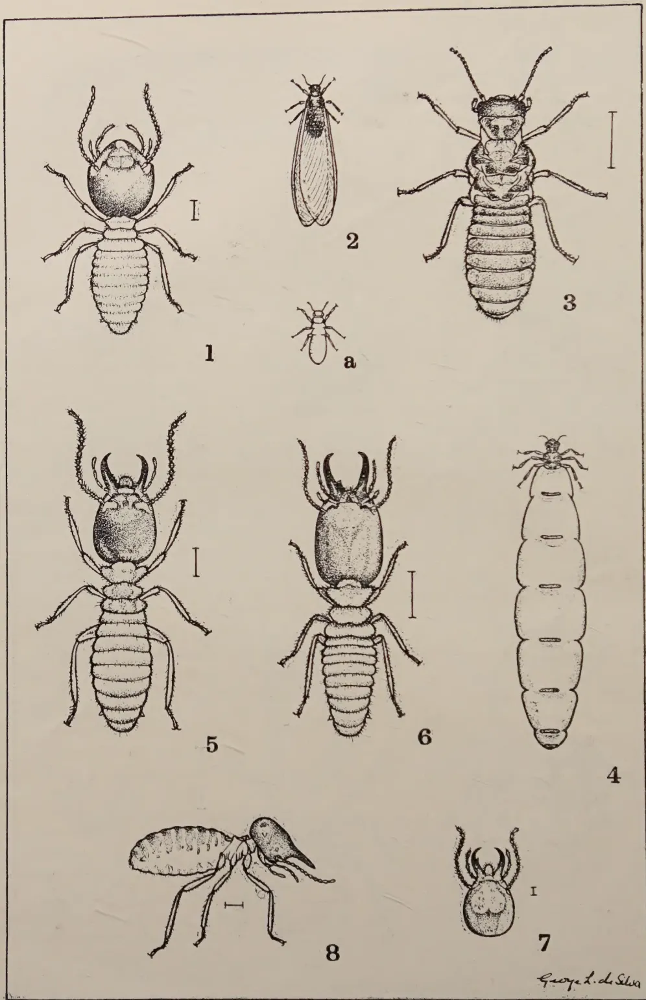
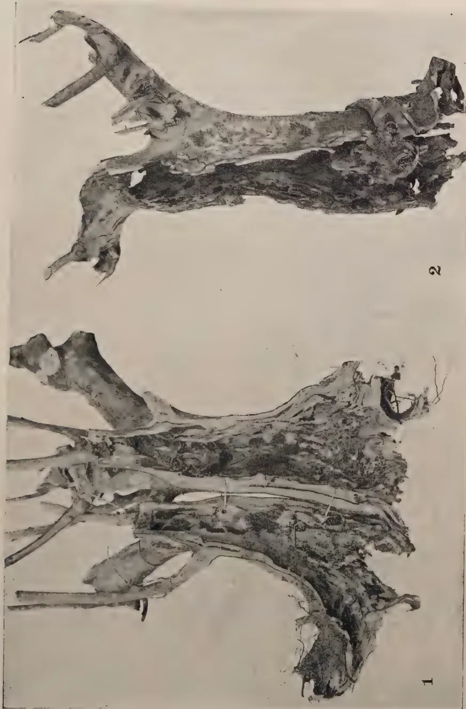
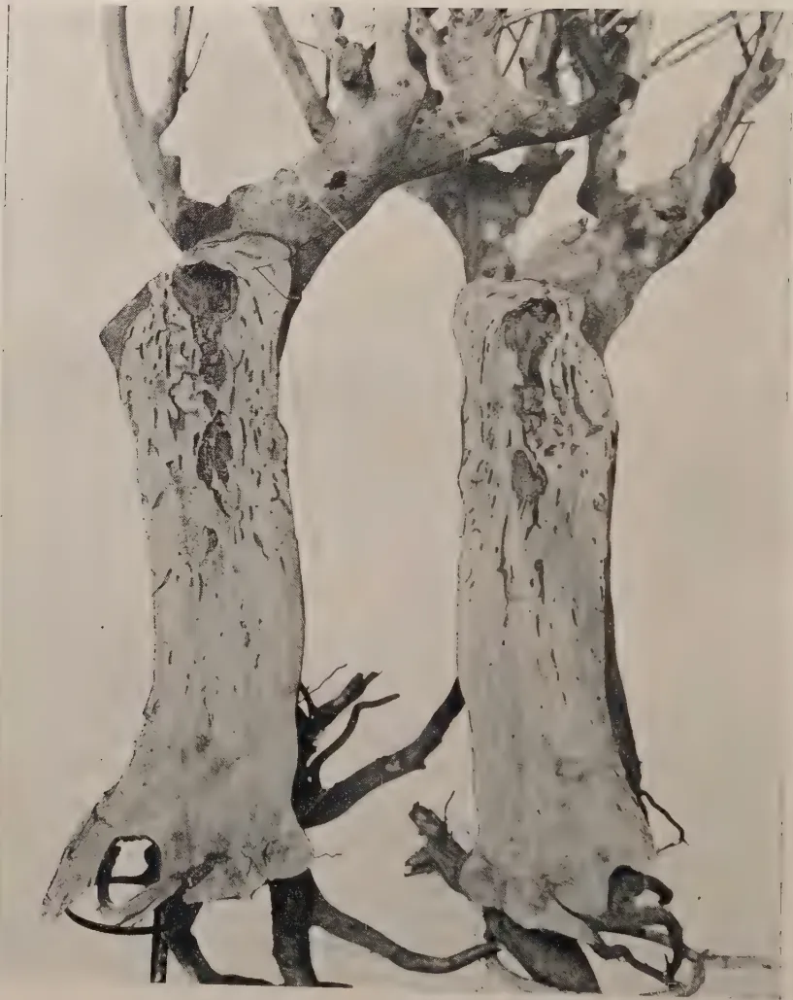
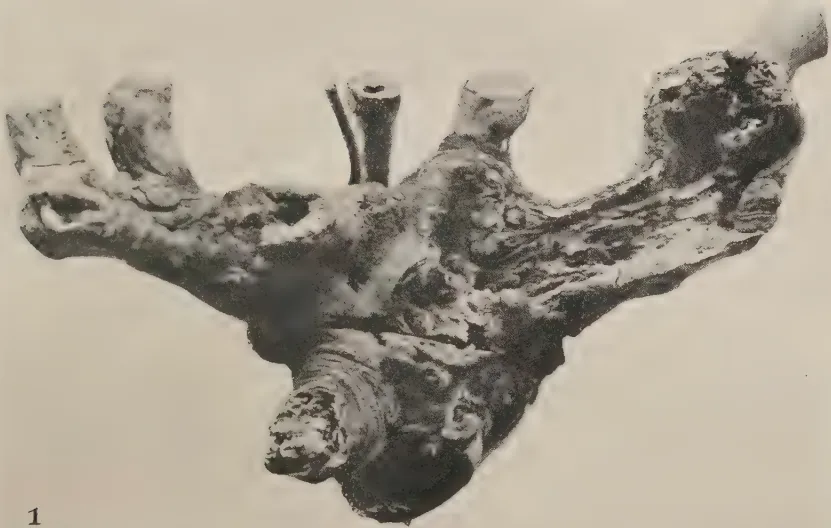
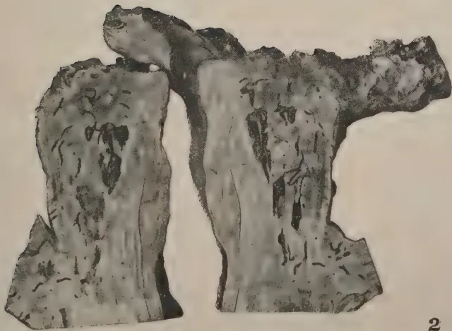
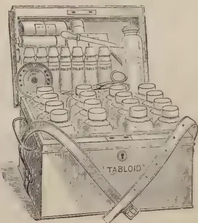

VOL. LXVII.
PERADENIYA, AUGUST, 1926.
No. 2.
The present number of the Tropical Agriculturist contains a preliminary progress report on the investigations which are being made into the problems of the termites attacking tea.
A considerable amount of investigation work on tea termites has been done by officers of the Entomological Division of the Department of Agriculture in recent years, and particular attention has been given to this problem by MR. JEPSON during the past twelve months.
The present report reviews the position up to date and indicates the lines along which the investigation is proceeding. Clear distinction is drawn between the "scavenging" termites which feed upon dead and diseased tissue and those species of termites which are responsible for direct injury to living and apparently healthy wood.
The species of Calotermes must be considered primary pests and owing to the nature of their injury must be regarded as pests of considerable economic importance in tea cultivations.
In Ceylon, three species of Calotermes have so far been identified as causing damage to tea. These are Calotermes militaris which is generally known as the Up-country tea termite, Calotermes dilatatus which is confined, as far as is at present known, to tea grown at low elevations and Calotermes Greeni which is confined to limited areas also at low elevations,
66[AUGUST, 1926.Details are given of the habits of the above species and the question of control measures is fully discussed. The control of these pests appears to be a problem of extraordinary difficulty and it is unlikely that it will be solved in a short time. The destruction of the colonies within the bushes for example presents great difficulties as the affected bushes bear no external indication of the attack. The lower portions of the bush are generally attacked in the case of Calotermes militaris and the roots are almost invariably affected. In such cases the destruction of the entire colony is a matter of difficulty.
Experiments have been made with the use of contact solutions and with fumigants, but these methods of control have not been found to be completely satisfactory.
It is emphasized that some measures must be taken to prevent reinvasion of bushes after treatment and to prevent the invasion of bushes which have hitherto remained unattacked. If the limitation of the area attacked is to be effected, attention to this aspect of control is essential. Greater attention must be given to the treatment of wounds and the larger pruning cuts and it is reported by MR. JEPSON that it is clear "that a system of bush surgery, with its attendant treatment of wounds and filling-in of cavities, must be regarded as an additional item in the routine operations connected with the cultivation of this crop in the termite-infested areas."
It is doubtful if the tea industry has yet sufficiently realized the losses which are being caused by attacks of termites. Those who have seen a really bad attack realize the magnitude of the losses, but fortunately such serious attacks are very few at the present time. To prevent the spread of the pest should be the object of all concerned and the continuation of investigations of control measures without interruption is considered to be most essential.
AUGUST, 1926.]67F. P. JEPSON, M.A.,
Assistant Entomologist, Department of Agriculture.
The object of this preliminary progress report on tea termites is to survey the present position, to indicate the line of enquiry which is being followed, and to emphasize some of the practical difficulties which the successful control of these pests presents.
The problem is considerably more complicated, more difficult of solution and the position far more serious than was at first realized by the present writer when undertaking this investigation. It is also probably far more serious than most tea planters realize. Those who have practical experience of these pests are fully alive to the seriousness of the position but those who are unacquainted with the termite-infested areas (and owing to the comparatively limited area attacked they must be many), can form little conception of the havoc wrought by these insects.
There seems little doubt that a gradual extension of the area at present attacked is taking place and it is important that the gravity of the position should be fully realized.
All other pests of tea cause damage of a more or less temporary nature leading to a reduction in crop which may be merely seasonal. None of these pests cause the death of the bushes which they infect. In the case of bushes attacked by termites of the genus Calotermes, however, the injury is of a permanent character and a bush once infested, remains infested and is doomed to die in due course, unless the infesting colony can be destroyed.
It is true that bushes survive for many years following the original infestation, but each year the frame undergoes further disintegration with a resulting decrease in yield. There is an annual enlargement of the size of the termite colony and a consequent increase in the demands made upon the vitality of the bush, until the entire interior is consumed leaving only an external shell.
The several species of termites, or so called "white ants," associated with the tea bush in Ceylon fall, conveniently, into two categories according to the type of injury which they cause to the bushes.
The more important form of damage is confined to the inside of the bush, and there is often no external indication that the bush is infested. In the case of two species of termites causing injury of this type, the damage takes the form of an extensive system of galleries which may permeate the entire bush from the branches to the roots. The wood attacked has a honey-combed appearance but, in the case of attacks of long standing, there may be
68[AUGUST, 1926.a collapse of tissue separating the galleries resulting in moderately large cavities being formed. The work of a third species results in the entire excavation of the main frame, roots, and even minor rootlets.
The damage caused by these species is very characteristic and is a valuable diagnostic in determining the identity of the species concerned even if no actual specimens of the insects are present for examination.
The species of termites which are responsible for this direct form of injury to living and apparently healthy wood belong to the genus Calotermes. (See Plate I). It is characteristic of these insects that their nests are located actually within the bush.
The second form of termite injury caused to tea bushes is entirely external and of a less serious nature. It is more widespread than the first mentioned type of damage and is so familiar to planters that when tea termites are discussed it is generally understood that this particular type of injury is referred to. It is important that the distinction between the two types of damage should be recognised.
The termites responsible for this second form of injury are Odontotermes redemanni, O. horni, and O. obscuriceps and one or more species of Eutermes. (See Plate II). Unlike the first mentioned group, they feed on dead or diseased tissue and not on living wood and consequently are generally referred to as "scavenging" termites. They visit the bushes solely for the purpose of removing any dead or dying material which may be present, such as is provided by dieback branches after pruning and tissue destroyed by fungi. Their nests are situated in the ground and not in the bush as in the case of the species of Calotermes already referred to. The route from their underground nests or termitaria above ground, to the dead material on the bushes to which they have been attracted, is covered by a passage way constructed of earth and faecal matter. It has been suggested that the plastering of sound bark in this fashion leads to the decay of the portion covered. If this should prove to be the case, a greater degree of importance must be attached to this group of termites than has formerly been the case, but at the present time there is no information available to support this allegation.
With regard to the first mentioned type of injury it appears that the termites display no partiality in their selection of bushes for attack and there is no reason, at present, to suspect that the impaired vitality of the bushes, following disease or lack of suitable cultivation, in any way increases their susceptibility to attack.
The species of Calotermes must, therefore, be considered primary pests and, owing to the serious nature of the injury which they cause to the bushes, must be regarded as pests of considerable economic importance so far as the cultivation of tea is concerned.
The damage caused by those termites which infest the bushes for the purpose of feeding upon dead and diseased tissue is of secondary importance and the bushes would be entirely relieved of their attentions in the absence of such tissue. Attention should, therefore, be primarily directed to the elimination of such tissue rather than towards the termites themselves. In any event the treatment of the nests constructed by this group of termites should present no insuperable difficulty once they have been located, but it is considered that the cleaning up of the bushes is a matter which calls for
![Plate 1 showing nine figures of Calotermes species. Figure 1: Early stage larva of Calotermes militaris. Figure 2: Nymph of neoteinic adult of Calotermes militaris. Figure 3: Nymph of winged adult of Calotermes militaris. Figure 4: Winged adult of Calotermes militaris with shed wings. Figure 5: Right fore-wing of Calotermes militaris. Figure 6: Neoteinic adult of Calotermes militaris. Figure 7: Soldier of Calotermes militaris. Figure 8: Head of soldier of Calotermes greeni. Figure 9: Head of soldier of Calotermes dilatatus. Each figure includes a scale bar.](3efaed8166ec4ee6e5739a64b2e9c1f5_1_img.webp)
Plate 1.
Figures 1—7, Various forms of Calotermes militaris. Figure 1. Larva, early stage, . Figure 2. Nymph of neoteinic adult, . Figure 3. Nymph of winged adult, . Figure 4. Winged adult which has shed wings, . Figure 5. Right fore-wing of adult shown in figure 4, . Figure 6. Neoteinic adult, . Figure 7. Soldier . Figure 8. Head of soldier of Calotermes greeni, . Figure 9. Head of soldier of Calotermes dilatatus, .
George L. de Silva.

This plate contains eight detailed line drawings of ant species. Figure 1 shows a worker ant of Termes obscuriceps from a dorsal view. Figure 2 is a winged adult of the same species. Figure 3 is a larger adult of T. obscuriceps after wing loss, with a vertical scale bar to its right. Figure 4 is a queen ant of T. obscuriceps shown distended with eggs. Figure 5 is a soldier ant of T. obscuriceps with a vertical scale bar. Figure 6 is a soldier ant of T. horii with a vertical scale bar. Figure 7 is a close-up of the head of a soldier ant of T. redemanni. Figure 8 is a side view of a soldier ant of Eutermes sp. The artist's signature, 'George L. de Silva', is in the bottom right corner.
Plate III.
Figure 1.—Worker of Termes obscuriceps, . Figure 2.—Winged adult of T. obscuriceps. Figure 3.—Adult of T. obscuriceps after dropping of wings, ; a—natural size of figure 3. Figure 4.—Queen figure a—of T. obscuriceps distended with eggs. Compare original size shown in a. Figure 5.—Soldier of T. obscuriceps, . Figure 6.—Soldier of T. horii, . Figure 7.—Head of soldier of T. redemanni, . Figure 8.—Soldier of Eutermes sp, side view. .
AUGUST, 1926.]69primary consideration. The excision of dead wood due to fungus diseases, and the subsequent treatment of wounds, filling-in of cavities and treatment of pruning cuts are matters which demand serious attention on the majority of estates, apart from their connection with termite injury. These operations are concerned with the prevention and treatment of fungus diseases and, therefore, do not, properly speaking, fall within the scope of an Entomological inquiry. The presence of dead and diseased wood attracts termites of the scavenging type, and the existence of cavities and wounds affords a convenient mode of entry for the colonizing individuals of the genus Calotermes and the cleaning up of the bushes and treatment of wounds is, therefore, immediately connected with the consideration of control measures against these pests. Attention to the recommendations of the Mycologists in this connection should be the first step towards dealing with the termite problem.
For the present, so far as this investigation is concerned, attention has been concentrated upon those termites which are responsible for the more serious type of injury. The species concerned are Calotermes militaris, C. dilatatus and C. greeni and the following general remarks on the genus Calotermes are equally applicable to the three species.
Termites are social insects and live in more or less large colonies, the individuals of which the community is composed being of several forms or castes. These castes consist of reproductive and sterile forms, the reproductive members themselves consisting of both winged and apterous individuals. The sterile castes of most species are represented by soldiers and workers, the former being characteristic and conspicuous insects provided with powerful mandibles which enable them to repel invaders of the nest, while the main duties connected with the economy of the community devolve upon the workers, which care for the eggs and young and tend and feed the queens. In the case of termites of the genus Calotermes the reproductive castes are represented by two forms, winged and wingless. The function of the former caste is to found new colonies and insure the dispersal of the species. These individuals, which are of both sexes, issue from the parent nest in large swarms at certain seasons, the time of flight, no doubt, being influenced by atmospheric conditions. The wings are not adapted for long flights, but enable the termites to reach a site, within comparatively short range, for the foundation of a new community, when they are discarded by voluntary fracture at a suture near the wing bases. There is no doubt that only a small percentage of the total individuals which emerge from a nest succeed in establishing new colonies as they are at this stage somewhat helpless creatures and fall victims to natural enemies, such as other insects and birds, before a suitable domicile is discovered.
The duties of the wingless or "neotenic" forms appear to be concerned with the maintenance of the original colony. The individuals are of both sexes and are generally concentrated in one portion of the nest.
In most genera of termites the activity of the nest centres around a single enormously distended queen enclosed in a royal cell from which she cannot emerge. She is accompanied by her consort who, however, is free to leave the royal chamber at will.
70[AUGUST, 1926.In the case of Calotermes, the original founder of the nest retains her normal size with but a slight distention of the abdomen. Although she is the queen, a number of her progeny develop into apterous egg-laying females which still reside in the parent nest.
The worker caste is absent in this genus and the duties which are ordinarily performed by this caste in most other genera, such as foraging for food and care of the young appear, in Calotermes, to be performed by the larvae.
The termites of the genus Calotermes are of a primitive type. It has been suggested by Bugnion and Popoff (1) * that the sexual organs of a certain proportion of the larvae may become atrophied. In this case the need for the development of wings in such individuals disappears and the atrophy of the sexual organs may be followed by that of the wings and also of the visual organs as a natural sequence. If this assumption is correct asexual individuals would represent a worker caste in process of evolution.
Soldiers are present in the species of this genus in common with all genera and although slight external sex distinctions may be detected between the members of this caste, reproduction does not take place. The soldiers, in proportion to the total members of the colony, are comparatively few in number and are concerned with the defence of the nest from invaders.
There is nothing at present known regarding the life-history of the Ceylon Calotermes. The life-cycle is probably a lengthy one extending, possibly, over a period of one, or even two years.
It is not proposed, in these notes, to deal with a technical description of the various castes and stages in the metamorphosis of the species of Calotermes nor to discuss the question of caste origin, but a brief reference to the stages through which the insects pass in the course of their development may be made.
Eggs are laid both by the winged and neotenic females. Eggs have been obtained, in the laboratory, from both types of females and although they were successfully hatched the larvae did not survive.
Upon hatching a certain small proportion of the young are destined to become soldiers while there is, at this stage, little obvious difference between the remaining larvae which pass through a series of moults, eventually reaching the final nymphal condition. Two forms of nymphs may be readily recognised, the wing pads of those which are to become winged adults being readily detected. The wing pads are absent in the other form which develop into neotenic individuals. The actual transformation to the adult instar is accomplished in a few minutes by the shedding of the nymphal skin. In the winged form, the wings are fully expanded in about 10 minutes after the final ecdysis and assume the dark brown colour of the mature adult in a few hours. It is probable that the sudden transformation to the winged state takes place in response to atmospheric stimuli and is accomplished by all nymphs of the first form almost simultaneously shortly before the colonizing flight is undertaken.
The behaviour of the winged individuals after leaving the parent nest is not known. It is believed that a female termite, accompanied by her consort, flies to the plant in which she proposes to found her colony. The shelter
* See references at the end of this article
AUGUST, 1926.]71afforded by a crevice or wound is probably utilized before entering the wood. The procedure adopted by certain other species of termites is possibly now followed and a small royal cell excavated. Mating probably does not take place until the construction of the royal cell has been completed.
Owing to the retiring habits of these insects, it is extremely difficult to follow their behaviour in the galleries which they may construct in wood. They can be readily induced to bore into wood, but the subsequent dissection of this breeding medium to follow their development disturbs them considerably, and it is difficult to avoid the accidental destruction of a certain number of individuals during the exploration of their galleries.
Cleveland (2), in his valuable researches on termites, has found that in the wood-eating genera the substance in the wood which is made use of is cellulose. This led him to feed termites on pure cellulose in the form of filter paper and he found that the insects, under these conditions, behaved in a perfectly normal manner and could be conducted through their entire metamorphosis from egg to sexually mature adults in this fashion. The termites were confined in glass vessels and their development could be followed without difficulty. This method has been adopted here and some specimens have been kept alive and active for nine months. Although eggs have been laid, and in some cases have hatched, the larvae have not survived owing, possibly, to the moisture conditions being unsuitable. It is hoped, however, that continued attempts will meet with greater success, as this method has many advantages and the oviposition of eggs and subsequent development of the young can be witnessed, which is quite impossible if these insects are bred in wood.
It is extremely important that certain facts in the life-histories of the species concerned should be ascertained, as they may have an important bearing on the question of economic control. For example the colonizing flight of winged adults may take place at a definite season, or seasons, of the year. A knowledge of the expected time of flight might enable one to frustrate it by a possible slight variation in the time of pruning and by treating the bushes with the object of destroying the insects which are about to emerge in swarms. A knowledge of the complete life-cycle may indicate a weak spot in the life of the insect when it is most vulnerable. A familiarity with the life-history of these species should, strictly, precede any trial of control measures in the field, but as the life-cycle is of long duration and may be difficult to ascertain, control experiments will be conducted with what information is at present available.
An extremely interesting fact in connection with the wood-eating termites is the presence in the intestines of all stages in the life-cycle of castes which feed on wood, of flagellate protozoa, commonly known as Trichonymphids. Numerous theories have been advanced to account for the existence of these organisms in such a situation, the generally accepted view being that their presence is essential to enable these insects to convert the wood upon which they feed into a suitable condition for assimilation. The protozoa are absent in certain castes and these are consequently unable to feed upon wood and have to be supported by other members of the colony.
72[AUGUST, 1926.Cleveland (3) has found that by incubating the insects for 24 hours at a temperature of 35 C. the protozoa are destroyed and that the termites themselves die in from 10-20 days as they are unable to digest their food when deprived of these organisms. If, however, they are re-infected with the protozoa, or are fed on digested wood, they will survive indefinitely.
This information is not only of interest but may possibly be put to economic use, as in some cases dry heat alone may be utilized to destroy a colony of termites.
This species is generally known as the Up-country tea termite. The chief scene of its activity is the Maskeliya District where it is extremely destructive on a large number of estates. It has also been found in Albizia moluccana and Grevillea robusta in the same district. There are a few records of its sporadic occurrence in tea in Dimbula, one in Bogawantalawa and one in the Ratnapura district. It has also been collected in diseased specimens of Grevillea robusta in the North Matale district, but not yet in tea in this locality. Probably its range of distribution is far wider than at present believed. Owing to its insidious mode of attack, its presence may remain undetected for many years and only be accidentally disclosed at pruning time.
The precise point of entry of the insect into the bush has not been ascertained. The attack has been of such long standing in most of the bushes examined that it is quite impossible to form any opinion on this point. In one instance there appeared to be conclusive evidence that the attack had commenced in the roots and by following the system of galleries they were found to terminate some distance below the point where branching from the main stem took place. It was found in this instance, that the lateral roots were adjacent to those of a severely infested bush and it appeared that the termites had made their way from one bush to the other some way below the surface of the soil.
It is certainly possible that this is a common method of infestation, but it is also probable that the bushes are invaded above ground by the winged individuals, although no evidence has been adduced in support of this supposition. It would be difficult to find a single bush, in the older planted fields of the Maskeliya district, which does not afford innumerable suitable points of entry for the winged form.
Whatever the mode of entry the method of excavation within the bush is the same. The main stem, roots and larger branches are completely hollowed out almost to the cambial layer, often only a shell remaining. A large number of adventitious roots grow into the accumulation of earthy material with which the cavity is packed. These roots arise from the inside walls of the lower portion of the cavity and, no doubt, assist in the nourishment of the bush (See Plate III).
A bush attacked in this way is doomed and cannot be rebuilt. It is only a matter of time before it dies, but there is no doubt that the bushes can survive an attack of long standing and may continue to yield crop for many years after the original infestation has taken place. The yield, however, must decrease annually until it ceases with the ultimate death of the bush.

The image contains two black and white photographs of a tea bush, labeled Figure 1 and Figure 2. Figure 1, on the left, shows the bush split in half to reveal a large, irregular central cavity. Figure 2, on the right, shows the same bush from a different angle, highlighting a collapsed central cavity. Both images are labeled with the number 1 and 2 respectively at the bottom right of each frame.Plate III.
Figure 1.—Tea bush split in half to show typical central cavity formed by Calocermes militaris. Figure 2.—Tea bush showing typical injury caused by Calocermes militaris. One side of the bush has collapsed showing central cavity.

Plate IV.
Tea bush sawn in half to show type of injury caused by Calotermes dilatatus
AUGUST, 1926.]73Only those who have seen an area of tea severely attacked by this species can have any conception of the extent of the damage caused, or of the serious nature of this pest. From information received it appears that the range of attack by this species is gradually extending and it is important that the gravity of the position should be appreciated and that some method of arresting the further extension of the pest be devised.
This species is considerably smaller than C. militaris, and is confined, so far as is at present known, to tea grown at low altitudes. Its behaviour does not resemble that of the Up-country species, in all particulars, but the damage which it causes is equally serious.
There is no doubt that this species gains admittance to the bush well above ground level, almost certainly through wounds and cavities. (See Plate V. Fig 1). It has been suggested that Shot-hole Borer gallery entrance holes may be utilized for this purpose, and this may be the case; but a slight extension of the Borer entrance holes would be necessary to admit adults of the winged form even after the wings had been discarded. If these perforations are taken advantage of, it is a further argument in favour of high cultivation in order to accelerate the healing over of the entrance holes made by Shot-hole Borer. Apart from these entrance holes there is a wide selection of suitable points of entry available on the average tea bush, particularly those provided by wounds as a result of wood-rot due to fungi. The galleries extend downwards towards the collar and only in advanced cases of attack of long standing do they penetrate as far as the roots. They form a net-work of communicating tunnels giving the wood, in longitudinal section, a honeycombed appearance. (See Plate IV. and Plate V. Fig 2). The characteristic central cavity associated with C. militaris is not produced although, occasionally, several galleries may coalesce by a breakdown of intervening tissue to form small cavities.
It may happen that two or more entirely independent colonies, the progeny of separate queens, may exist in the same bush, and this considerably complicates the question of control.
The damage caused by this species is of a very serious nature, large lateral branches dying back and eventually the entire bush. On two estates which have been visited probably 80% of the total bushes on each estate are infested to a greater or less extent. Vacancies have been supplied as they occurred but even the "supplies" are being attacked and in view of the extremely serious degree of infestation there seems little prospect at the present time of anything being done to save the bushes on these estates from extinction. In a great many cases the entire colony, and all portions of the bush infested thereby, could be removed by collar-pruning the bush several inches above soil level and even in some cases just below the point where branching takes place from the main stem. This is a drastic operation and is said to result in a heavy mortality of bushes so treated at low altitudes. As, however, the death of the infested bushes is only a matter of time, the experiment is worth considering as the bushes might thereby be given a new lease of life. It is essential, however, that the cut surface should be immediately sealed with an antiseptic and waterproof covering of a permanent nature, and, at the time of writing, a suitable material which fulfils these conditions is wanting.
74[AUGUST, 1926.This species is larger in size than the two already referred to—C. militaris being intermediate between this species and C. dilatatus. C. greeni is not widely distributed, nor is it at present the same menace to the cultivation of tea as the two other species of Calotermes. It has only been recorded as a pest of tea at low elevations and has also been collected from Grevillea robusta in the North Matale and Balangoda districts, in a jungle tree, Croton aromaticus at Peradeniya and in Cashew nut, Anacardium occidentale, in the Southern Province.
The behaviour and type of injury caused by this species to tea bushes closely resemble that of C. dilatatus. Entry is almost certainly effected through wounds in the frame of the bush and the galleries rarely extend to the roots.
The distribution and damage caused by C. greeni are so limited at the present time that this species does not warrant the same degree of attention as the two other species of this genus. The habits and mode of attack of C. greeni being almost identical with those of C. dilatatus it is almost certain that any system of control which might be devised for the latter species would be equally applicable to C. greeni.
In considering the question of control of the tea Calotermes there are two distinct problems which present themselves for solution. In the first place it is necessary that the infesting colony within the bushes should be destroyed and, secondly, the reinvasion of the treated bushes by winged termites has to be prevented, otherwise the expense of destroying the colony will not have been justified. These two problems apply to the three species concerned.
The destruction of the colonies within the bushes offers many practical difficulties. The affected bushes, which may bear no external indication of attack, contain a central nest composed of hundreds of active termites which are feeding upon the heartwood. There is no apparent connection, in the more recently infested bushes, between the nest and the exterior which might be utilized for the introduction of an insecticide. No external application to the bushes can have any effect upon the inmates of the bush, nor, so far as one can judge at present, can they be affected by any application to the soil. In the less severely attacked bushes there seems, therefore, no possibility of reaching the colony except by means of an artificial perforation. There should be no objection to the drilling of a small neat hole, providing that it is properly and permanently sealed immediately after the introduction of an insecticide. If the filling is moulded with the finger tip to form a small concave depression, the filling material should, in time, be covered with a growth of callus tissue.
Certain experiments, of a purely preliminary character, have been carried out with the object of ascertaining whether the colonies situated within the bushes can be reached in a comparatively simple manner and the most readily available insecticides have been employed in these tests. It must be admitted that little progress has been made towards the discovery of a satisfactory

1

2
Plate V.
Figure 1.—Top of tea bush showing injuries due to wood-rotting fungi which are utilized by the winged forms of Calotermes dilatatus to gain admittance to the interior of the bush. Figure 2.—The same bush illustrated in Figure 1, sawn in half to show galleries formed by Calotermes dilatatus.
76[AUGUST, 1926.solutions appear to have any injurious effect upon the bushes. While, therefore, these materials destroy by contact those termites which are in the path of the descending fluid, a sufficient number of individuals are likely to survive to refound the colony.
Many liquid materials could be mentioned which would be equally efficacious as contact insecticides, but all of them must have the objection of being unable to penetrate all the ramifications of the nest and contact solutions can only be palliatives rather than remedies. If this treatment is carried out at each pruning, it must result in the destruction of a large number of insects, and may, in some cases, prevent the emergence of individuals which are about to embark upon a colonizing flight.
The adherents of this method of treatment are satisfied as to its efficacy and this practice might be adopted by others whose estates are affected until a more permanent form of treatment can be devised.
This treatment can only be adopted in advanced cases of attack where the central cavity can be reached through an opening to the exterior. Such bushes do not, however, represent the majority of affected bushes and those in which the damage is less evident are the ones most worth saving as the attack is less advanced.
It is considered that the use of a highly toxic gas has greater possibilities than that of a contact solution, particularly a gas which is heavier than air to allow of its penetration to the extremities of the workings in the rootlets.
The two most familiar fumigants employed against insects are carbon bisulphide and hydrocyanic acid gas. The former is a clear liquid volatilizing into a highly toxic vapour on exposure to air. The gas has extremely penetrating properties and is two and a half times as heavy as air. Unfortunately it is extremely toxic to plant life, especially when in contact with the root system. A dosage of 2 ozs. per bush destroys 95 per cent. of the infesting termites but also kills the treated bush and further trials are to be made with reduced doses. The fact that the vapour is extremely inflammable should be no objection to its use in the field with the exercise of obvious precautions.
The usual method of generating hydrocyanic acid gas is by treating potassium cyanide with diluted sulphuric acid, a gas being immediately evolved which is lighter than air. This method would be too cumbersome for use in the field. This gas is also generated by calcium cyanide when in contact with atmospheric moisture. Calcium cyanide is manufactured in various grades of fine and coarse powder, the finer grades being delivered to the areas treated by means of a powerful force pump.
Experiments have been carried out in Maskeliya with this fumigant. The method of application was to drill a neat in. hole into the bush, just below soil level. In all cases the central cavity was reached when only to in. of wood had been penetrated by the bit. A reducing nozzle was then fitted to the delivery pipe of the pump and inserted in the hole thus bored, the calcium cyanide dust being pumped into the cavity. The pressure was so great that in several cases the dust was expelled from other openings in the bushes which had to be plugged with clay before continuing the operations. Doses varying from to oz. were administered and the perforation
AUGUST, 1926.]77which had admitted the material immediately sealed. Later examinations conducted at intervals of from 16 hours to 12 days after treatment indicated that the treatment had been a failure, many living termites still being found in the bushes. Other treated bushes are being left for later examination but in view of the results already obtained little success is anticipated to attend these examinations. These experiments were conducted by Dr. Brittain, Entomologist to the Government of Nova Scotia, with the collaboration of the writer.
A number of bushes have been treated with another fumigant, paradichlorobenzene. This is a white crystalline substance having an odour which resembles ether. It vapourizes under suitable atmospheric conditions liberating a non-inflammable poisonous vapour which is five times heavier than air.
Doses ranging from th to oz. were applied, the method of application being to drive an alavangoe downwards into the central cavity of severely infested bushes, pour in the crystals of this fumigant and plug the entrance to the cavity with clay.
Bushes examined after an interval of 12 days indicated that the termites were unaffected. No injurious effect upon the bushes was observed at this time and further tests will be made with increased dosages and extended periods of examination.
The advantage of this material is that it is comparatively safe to handle, easy to transport and to apply, slow in completely vapourising and its action therefore enduring for a period of from 2-4 weeks. The vapour is considerably heavier than air, a very important desideratum of any insecticide employed against this species owing to the heaviest infestation being in the lower portions of the bush and roots. It is toxic to plant life except in small doses and the maximum dosage which the tea bush can withstand without fatal results requires to be ascertained.
The same difficulty in reaching the living colony is experienced with these species as with C. militaris; in fact it is greater, as these species do not make a large central excavation into which an insecticide may be introduced and from which it may penetrate to the galleries leading from the cavity.
Experiments have been conducted on a small scale against C. dilatatus with two fumigants. Carbon bisulphide at the rate of oz. per bush was introduced through a inch hole bored into the main stem, the hole being immediately sealed with cement and sand. It was hoped that the hole which was driven into the stem would perforate the main gallery system and permit the vapour liberated to penetrate all the gallery workings. In each case the hole had necessarily to be made at random as there was no external indication of the location of the gallery system. It was found that where the workings had been penetrated the treatment was entirely successful, but in some cases there appeared to be entirely separate colonies, the offspring of independent parents, and there was no communication between the galleries of each colony. Thus one injection of carbon bisulphide may be insufficient to eradicate all the insects in one bush. Two, or even three, random holes would be necessary to insure reaching the galleries of all colonies,
78[AUGUST, 1926.Extensive tests have been made against this species by Dr. Brittain with calcium cyanide. The dust was introduced in the same manner as described above in the experiments against C. militaris, but was more difficult to apply owing to the limited space into which it could be driven. It was found, upon subsequent examination, that the termites were dead where they had come in contact with the gas liberated by this fumigant, but that those situated in galleries remote from the point of introduction of the insecticide were unaffected. The existence of separate colonies, having no communication with one another, may account for the failure to destroy all individuals in the bush, but the accumulation of "frass" in the galleries might also have obstructed the free passage of the gas.
Any expenditure of time, labour and money in eradicating the termites from an infested bush is obviously rendered valueless if the bush is to be exposed to the danger of reinvasion by fresh colonies subsequent to treatment. Some method of protecting the bushes from attack is urgently desirable, not only to prevent the reinvasion of bushes which might have been relieved of their infestation, but also to prevent the invasion of bushes which have hitherto remained unattacked.
If the limitation of the area now attacked is to be effected, attention to this aspect of control is essential, even if all endeavours to economically eliminate the colonies in the bushes themselves prove unsuccessful.
In the case of C. dilatatus and C. greeni it is certain that the winged individuals of the colonizing flight gain admittance to the bush above ground level, and it is almost equally certain that advantage is taken of wounds, due to wood-rot, to attain this end. Although there has been no evidence that C. militaris does the same, there are no grounds, at present, for assuming that the winged individuals of this species should behave in a manner totally dissimilar to the other closely connected species of the same genus. It is possible that winged forms may descend into the soil and make their way into the bush below ground level, but there seems to be no good reason for supposing that this is the case when so many suitable points of entry exist on the frame of the bush itself. Shot-hole Borer does not attack tea on any estate from which C. militaris has been recorded as a pest of this crop. This insect cannot, therefore, be charged with furnishing a ready made entrance for this species of termite. It is almost certain that the many wounds due to faulty pruning in the past and to the agency of parasitic and saprophytic fungi are utilized to enter the bush.
No attempt has so far been made in this investigation to deal with this most important aspect of the problem but it is clear that a system of bush surgery, with its attendant treatment of wounds and filling-in of cavities, must be regarded as an additional item in the routine operations connected with the cultivation of this crop in the termite infested areas.
As the wounds caused by wood-rot are immediately due to the agency of fungi, this problem really falls within the Mycologists' province. It is almost certain that the elimination of dead and diseased wood, and the proper treatment of wounds, and larger pruning cuts will result in a considerable reduction in the injury at present caused by the three species of termites of
AUGUST, 1926.]79the genus Calotermes. The attentions of the scavenging group of termites should also cease in the absence of the material on the bushes, which is the source of their attraction.
P. H. CARPENTER, F.I.C., F.C.S.,
Chief Scientific Officer
and
C. R. HARLER, B.Sc., F.I.C.,
Chemist, Indian Tea Association.
Although it is realised that definite facts rather than general theories regarding tea manufacture are required, yet, since the leaf produced from no two areas is the same and conditions are different in every factory, it is impossible to lay down any hard and fast rules for the manufacture of tea. All that can be said is that under certain conditions, such and such a treatment will tend to accentuate this or that quality of a tea. There can be no standard process in tea making for conditions are always changing and each operation must be conducted with a view to making the best of existing conditions. Apart from this it is realised that the blending scheme at Home requires several definite kinds of tea and it seldom pays to alter the type of tea for which a garden has a name although it undoubtedly pays to improve the type
Good Leaf.—The growing and plucking of the leaf is outside the scope of this paper but some indication as to what constitutes good leaf may be given. The best leaf is obtained from bushes having a long growth of old wood and a short growth of new wood and the cutting down of a garden generally brings about a falling off in quality over the next few years. The best tea comes from old, unpruned bushes and the poorest tea is from collar-pruned bushes. Darjeeling, a quality area, has large percentages of unpruned tea.
Plucking also influences quality for the closer the plucking the better the leaf. Many gardens in Assam pluck to the janum or “fish leaf” from the beginning of the season whilst in the Dooars and the Surma Valley longer plucking is employed in the early part of the season largely on account of
80[AUGUST, 1926.climatic conditions. On the other hand, the stem near the janum is less succulent than that above a leaf and close plucking is liable to produce more stalky teas than is long plucking.
Both excessive shade and excessive sun can lower the quality of the leaf.
That good quality is made in the garden has become an axiom in the tea districts for in addition to the question of pruning, plucking and shade, factors within our control, there are other factors like the type of soil, jat of bush and climate, over which we can exercise little control, all influencing the leaf. It is recognised that gardens in some districts can more easily produce certain types of teas than gardens in other districts, e.g., the Dooars can produce thickness of liquor and Assam can produce pungency, but the importance that needs to be acknowledged is that good leaf brought in from the garden is often spoilt owing to unsatisfactory conditions in the factory. It is noticeable that factories where good tea is made are invariably those in which great care is taken and attention paid to detail.
Red Leaf.—After the leaf is plucked it often necessarily remains in the basket for several hours before it reaches the leaf-house. It is known that the leaf in a tightly packed basket gets hot and temperatures as high as 140° F. have been recorded in the centre of leaf baskets. This heating accelerates the withering process so that the leaf turns red. Whilst this in itself is not necessarily deleterious in that good tea can be made from red leaf, yet it is impossible to make good tea from a mixture of red leaf and fresh leaf, for the two represent different stages in the withering process. Red leaf can only be avoided by keeping the leaf cool and this is done by allowing plenty of air to get to the leaf. Although it is customary to bring in the leaf twice a day for withering, it is much better to send it in oftener if possible and a continuous supply of leaf throughout the day should be aimed at.
The leaf does not get hot on the top and at the sides of the basket although these positions are exposed to the heat of the sun. In fact leaf in the sun only gets slightly warm owing to the cooling effect of evaporation. The loss of moisture from the leaf in the basket constitutes the beginning of the wither but with red leaf the process is carried much further without the loss of water. The chemical wither is well advanced in red leaf and often such leaf should be manufactured when it reaches the factory, for the full chemical wither is realised although the leaf is not physically ready. Red leaf should be separated from the fresh leaf as soon as it comes in from the garden.
It is of interest to observe that leaf tightly packed to the exclusion of air does not get hot. Such tight packing is impracticable and efforts must be employed in the direction of loose packing in order to keep the leaf cool.
The withering process is the most important in tea manufacture because no manipulation of the other processes in manufacture can make up for a poor wither.
The change taking place in the leaf as it withers is a complicated one, partly physical, partly chemical. The physical wither consists in the development of a flaccid or flabby state in the leaf owing to the collapse of the leaf cells, and the chemical wither denotes certain changes in the constituents of the cell sap. Both processes may go on separately, but in practice they go together.
AUGUST, 1926.]81It is sometimes thought that the main part of the withering is the obtaining of the leaf in a state fit for rolling. If this were all that were necessary withering could easily be carried on by passing leaf through some form of dryer. The process however is a chemical one and the physical change in the leaf is not an essential one to the making of black tea.
The original tea makers, the Chinese, rolled the leaf and twisted it and custom now demands a tea with a twist. But good black tea may be made from leaf which is still turgid and physically fresh.
The Chemical Wither.—Certain chemical changes must take place within the tea leaf in order that it may be made into black tea and the rapidity with which these changes take place depends on the vitality of the leaf. As the vitality is lowered the processes are accelerated. The vitality may be reduced in several ways. The leaf may be poisoned, it may be heated or it may be partially dried, and all three treatments lower the vitality and hasten the chemical changes in the leaf.
Thus if leaf is placed in chloroform vapour it is poisoned and in ninety minutes the fresh green leaf has turned copper coloured although physically it is still fresh. This method is not practicable in the factory.
If the leaf is heated the chemical wither takes place rapidly in relation to the rise in temperature, provided that the latter does not rise above F. at which temperature the enzymes are destroyed. In this case the leaf will not ferment and green tea results. Leaf has been heated in a saturated atmosphere so that no drying takes place yet, if the temperature be high enough, and below that mentioned above the leaf takes on the colour associated with the withered state in a short time. As the temperature becomes lower, heat, unaided by drying takes longer to bring about the chemical wither, and we know that at about F., the average Monsoon temperature, the leaf will not wither even in two or three days. This is a common experience in the rains when the atmosphere is saturated and no physical wither is possible. In lofts the wither is hastened by raising the temperature.
The usual means employed to lower the vitality of the leaf is to slightly dry it. When the leaf has become flaccid as the result of the collapse of the cells, then further drying is unnecessary and a certain time must be allowed to elapse for the chemical wither to take place, the time being dependent upon temperature and the amount of drying. The lower the temperature the longer will be the time required.
It is difficult to tell when the leaf is chemically ready, but a rough guide is given by the subsidiary veins of the leaf which turn from a bright green to a reddish brown when the leaf is ready. When this is noticed on the first leaf, the bud has usually gone past this stage and practically the whole of it is reddish brown, whilst the second leaf will scarcely have changed at all. With coarser plucking the divergence between the chemical state of the various leaves is still greater. Herein lies one of the main difficulties in manufacturing good tea from coarse leaf.
The same amount of drying does not always produce the same results unless the time is altered to suit other conditions. Thus to-day the average temperature may be F. whilst to-morrow it may be ten degrees lower. Although on the cool day the leaf may possibly dry as quickly as on the warmer day yet the chemical wither will be more quickly realised at the higher temperature.
82[AUGUST, 1926.An important point to be noticed is that after the drying has produced a flabby leaf, further drying may retard the chemical withering. In open leaf houses conditions are often particularly difficult. When monsoon conditions do not prevail, then the leaf sometimes dries without withering. During Monsoon conditions it often happens that the leaf has not dried sufficiently and the chemical wither has not proceeded far enough before the leaf has to be manufactured in order to make room for the incoming leaf. If using lofts care must be taken to stop the forced draught as soon as the leaf has sufficiently dried.
The Physical Wither.—It is of the utmost importance that the leaf shall dry evenly. The evenness of the wither depends on the kind of spreading which should be thin. Comparatively few factories have sufficient rack area to allow for ideal spreading so that one leaf shall not overlap another. This disadvantage is most noticeable in factories using fan lofts.
The best could be made of existing conditions by turning the leaf over on the racks till the drying has proceeded far enough. When this stage is reached the leaf may be collected together to minimise any further loss of water but an uneven rise of temperature must be guarded against. This treatment of the leaf is however practically impossible.
On the racks one pound of leaf should occupy about a square yard, more when it is wet and the atmosphere damp, less when the atmosphere is dry. With wire racks the spreading may be somewhat thicker than hessian. This spreading is not ideal but it is thinner than that usually employed.
It is easy to tell when the leaf is physically ready, for when 4 lb. leaf dry to 3 lb. then the drying has gone far enough for rolling. Fresh leaf contains about 75 per cent. moisture so that the leaf in the state of dryness referred to, contains about 66 per cent. moisture.
Leaf is physically fit for rolling when it has become flaccid. Too quick drying, which may lower the moisture content of the leaf to 65 per cent., does not necessarily make it fit for rolling, because the chemical reactions may not have been realised. On the other hand, "red leaf" still containing a high percentage of moisture is often more flaccid than the leaf on top of the basket which has dried quickly in the sun.
Well withered leaf produces a black, well-twisted tea with a mature liquor whereas under-withered leaf gives a brownish flaky tea with a raw or bitter liquor. A strong broken tea such as is now demanded by the market requires a full chemical wither and a mechanical or physical wither on the light side. To produce teas such as this requires very careful control of the withering for it means that leaf must not be allowed to dry too far yet sufficient time must be given for the chemical wither to materialise. The chemical wither can of course take place without any drying but the time required is very long at ordinary temperatures.
AUGUST, 1926.]83Thus it is clear that any definite statement regarding the time leaf should be left on the racks is wholly futile, for the time must depend entirely on the atmospheric humidity or drying capacity of the air, and the temperature. This indicates how difficult it is to control the wither in open leaf houses.
The Drying Capacity of Air.—When using withering lofts there are one or two points needing careful consideration. Warm air not fully saturated with moisture is blown into the loft and then drawn across the leaf by fans at either or both ends of the loft. As this warm air passes over the leaf it picks up moisture and in time becomes saturated. It is obvious that as soon as this happens it ceases to be of use as a drying agent.
In order to avoid this, the air may be drawn through the loft more quickly but then there is a danger that the leaf on the racks near the air inlet will be over-dried. For controlling the air supply different parts of the loft must be fed with dry air as, for instance, by means of air ducts, and the state of the air should be examined by means of the wet and dry bulb thermometers.
A few remarks may be written here about the drying capacity of hot air. It often happens that, on a wet day, saturated air goes into the tubes of the dryer but when the temperature is raised from say 85° F.—the average ordinary air temperature—to 180° F. or 200° F. although the moisture content or absolute humidity of the air remains the same, the relative humidity is lowered and the drying capacity is greatly enhanced. Again when the air leaves the dryer at 120° F., although then it not only contains its original moisture but also that picked up from the leaf during drying, it still has, by virtue of its temperature, a lower relative humidity, i.e., a greater drying capacity, than when it entered the above. However, before this air cools down to 85° F. again, it will become saturated and deposit moisture.
The state of the air coming from the dryer naturally varies widely according to the speed of the air flow, the state of leaf being dried and so on. In one case it was observed that the exit gases from an Empire dryer showed wet and dry bulb readings of 100° and 120° F. respectively. This represents a relative humidity of about 60 per cent. whereas the air had entered the furnace tubes with a relative humidity 87 per cent. represented by wet and dry readings of 79.82° F. When the exit air in this particular case cooled to about 100° F. it would become saturated.
The air going into the lofts is largely composed of hot air which has not been through a dryer and has a high drying capacity in spite of the fact that its temperature is lower than that of the exhaust gases from the dryer.
During the Monsoon it often happens that with an average temperature of about 85° F. and a saturated atmosphere the leaf is liable to become scur before it has withered under natural conditions. If the chungs or racks are
84[AUGUST, 1926.kept scrupulously clean and free of all leaf from the previous day it is possible to extend the withering period before the leaf goes sour.
For bad weather conditions where no withering lofts are available it is possible to improve the condition of leaf that has remained on the racks over night by passing it through a large automatic dryer like an Empire or an Endless Chain Pressure at a temperature of 110° F. at a speed which discharges the leaf in 20—30 minutes.
The rolling system in a factory is generally controlled by the number of rollers. It may be said that with a system consisting in two half-hour rolls and a final short one before firing one big roller will cope with about 1,000 maunds pucca tea in a season or four rollers can manage about 5,000 maunds. This figure only constitutes a very general guide and will not do for districts where the season is a short one and the crop crowded into four or five months. In estimating the machinery required for a factory the average heavy day should be considered and sufficient machinery put down to cope with such a day.
The system of rolling generally suggested runs on the following lines :—
10—30 minutes, light pressure
45 ,, heavy ,, with about :—
10 mins. on 5 mins. off
or 7 ,, 3 ,, ,,
10 ,, final rolling after fermentation.
This system which includes kutcha sorting between the first and second roll is calculated to give tip. Many gardens roll hard the whole time and make broken teas which sell for their liquors. It is not suggested that these gardens should alter their rolling process since the teas produced meet a definite demand and fit in with the blending scheme at Home. But if at any time "tip" is needed, a light first roll will ensure that any tip present shall be visible. The final roll of 10 minutes is given for its physical effect only and in many cases no improvement has been recorded from the inclusion of this roll.
Hard rolling exposes red stalk and fibre but gives good liquors. Light rolling gives a better appearance but poorer liquors if the rolling is only continued for the same time as with the heavier pressure. The appearance of red stalk is also influenced by the wither and the fuller the physical wither the less will be the red stalk.
The speed of the roller is a factor worthy of attention. Early in the season, with only part of the machinery in use the tables often revolve at speeds in the neighbourhood of 80 revolutions per minute.
On one garden experiments were carried out in connection with roller speeds. In one case the roller made 58 revolutions per minute. The result was tippy B.O.P. of fine appearance amounting to 10 per cent. of the total and an O. P. rather poorly made, amounting to 20 per cent. When the
AUGUST, 1926.]85roller worked at 78 revolutions a much smaller, less tippy B.O.P. was obtained amounting to 20 per cent. of the total leaf and a very well made O.P. amounting to 10 per cent. The liquors from the fast roll were better than those from the slow roll although it must be mentioned that the slow rolled tea had been submitted to 1,200 less revolutions of the roller during the rolling period of one hour than had the fast rolled tea.
In Ceylon the rollers revolve about 45 times a minute but the rolling period may be as long as three hours. Ceylon teas have both appearance and liquors. If the slow method of rolling were to be adopted in North-East India then a longer roll would be necessary and many more rollers needed.
The temperature of the rolling room should receive attention for this influences the temperature of the leaf in the roller. The heat mechanically generated in the roller is very small and most of the rise in temperature here is due to the heat of fermentation. During the first roll the heat developed is small partly on account of the lightness of the pressure and partly because the fermentation has not well started. The heat developed in the second roll is greater but comparatively small compared with the effect of a warm room on the leaf temperature. Thus in a cool factory after 15 minutes' hard rolling in the second roll a rise of only 3°F. was observed. In hot factories however temperatures as high as 105°F. have been recorded during the second roll. The temperature of the rolling room should be kept at the same as the fermenting room and 82°F. is suggested as a practical possibility for plains situated gardens.
The practice of making the rolling and fermenting room all one is good in that it ensures a cool rolling room although it is harder to control temperatures in a large space than in a small one and for this reason such an arrangement may not be ideal from the point of view of the fermenting room.
In some factories, air is blown into the rollers for cooling purposes. It is preferable to reduce the temperature by other means for this practice causes a certain amount of drying and oxidation of the leaf with the production of poor colours.
The Kutcha Sorting.—The flat type of kutcha sorter is preferable to the rotary type which is apt to get clogged with leaf at the corners where the battens are nailed to the mesh. This leaf becomes over-fermented unless it is removed.
Unless the balls are all broken in the kutcha sorter or ball-breaker then the fermentation will be uneven with resulting unevenness in the infusions.
Two meshes are sometimes used in the kutcha sorter the first two-thirds being of 4-mesh and the last third of 5 or 6-mesh. This arrangement is said to give a more even mixture of fine leaf than that given by a sorter containing the same mesh throughout.—Quarterly Journal of the Scientific Department of the Indian Tea Association, Part 1, 1926.
86[AUGUST, 1926.R. A. TAYLOR, B.Sc.,
Physiological Botanist, Rubber Research Scheme, Ceylon.
The following notes prepared by Mr. R. A. Taylor, Physiological Botanist of the Rubber Research Scheme, Ceylon, and distributed at the Budding Demonstration held at the Royal Botanic Gardens, Peradeniya, on 8th July, 1926, are reproduced in the Tropical Agriculturist as they are of general interest:—
The object of budding is obvious to all and requires no explanation. It is essentially a short-cut to the production of high-yielding trees, and does away with the lengthy and difficult processes of selection, crossing, and the raising of genetically pure strains.
The plants raised by this means have a root stock grown from seed, preferably from vigorously growing trees, and a superstructure which develops from a bud attached at about ground level. The trunk, that is the part which will eventually be tapped, is developed from the bud and it will be seen that an acre planted up with bud-grafts from a common Mother Tree is really an acre carrying about 100 separate parts of one tree. If the Mother Tree has been carefully selected on account of its high yielding properties, it would be expected that the acre would carry 100 trees equal in value to the parent. The value of Budding depends on the truth of this assertion.
It has now been proved that, while many Mother Trees reproduce their high-yielding properties in their budded offspring, there are some which do not; and, unless a tree has been previously tested, there is no definite assurance that the offspring so raised will come up to expectation. Unfortunately the only method, known at present, of testing this ability to hand on high-yielding properties, is actually to tap and record the yields of the progeny. This testing alone therefore requires 6 years at the very least.
There are no trees in Ceylon which have been proved in this way, but work has been begun by the Department of Agriculture and will also be carried out by the Rubber Research Scheme on its newly opened Experiment Station. In this year's programme twelve consistent high yielders are being tested. It will be possible to include a further 20 or 30 trees next year. Of these latter about a dozen have already been selected, records of yield from all of which have been kept for at least 12 months.
It is essential that any tree used as a Mother Tree should be a consistent high yielder and for this reason yield records must be kept over a fairly long period. The longer this period of record keeping the better, as trees are
AUGUST, 1926.]87known which, while yielding heavily one year, may fall off considerably the following year, or may even yield well for a month or two and then deteriorate to medium or even poor yielders.
One year should be the minimum period employed and if possible daily records should be kept. If this latter is not practicable the yield from one tapping may be recorded every fortnight, but this of course gives no exact measures of the actual total yield obtained.
Once the Mother Trees have been definitely selected some of the branches should be pruned back to encourage the growth of young succulent shoots, from which the bark strips readily.
It is better not to cut the branch through where it is very thick as the resulting wound will then take a long time to heal over, and it may offer lodgment for fungal spores. No branch of a greater diameter than 4 inches should be cut and not more than 3 of the adventitious shoots which appear should be allowed to grow. This will in most cases ensure a complete callusing over of the cut branch and a supply of well-grown budwood will be available. This pruning can be conveniently carried out about the time the nursery for the stocks is being laid out.
It is advisable to have the stocks about one year, or at least not more than two years old, at the time of Budding, and they should be well grown. To ensure that vigorous stocks are available, the nursery should be in a high state of cultivation and the plants not too close together. It is suggested that rows be about 1 foot apart and the plants about 9 inches apart in the rows. This allows sufficient room to bud the plants in the nursery if this is desired, and prevents overcrowding. If the nursery is laid down at the same time as the Mother Trees are lopped, the stock and the branch from which the bud is to be taken will be of about the same age.
In choosing seed for stocks it is advisable to use only that produced by vigorously growing trees which show fairly good yields. The total effects of stock on scion are not yet known but it may be that future yields will be affected detrimentally by the use of stocks grown from seed from a poorly grown unproductive type of tree.
The actual budding operation can be carried out either before or after the stumps have been planted out. Both methods have been employed successfully, and the choice of methods depends on the time of year at which it is desired to bud, and probably on the growth of the stocks.
The plants are close together and less time is required to carry out the work.
Transport of Budwood, tapes, etc., is reduced to a minimum.
Less time and labour are required in making the subsequent inspections of the plants and in rebudding any failures.
The plants afford each other a certain amount of protection.
88[AUGUST, 1926.The stocks are generally more vigorous, as it is easier to keep a nursery in a high state of cultivation, and much of the success of Budding depends on the vigour of the stocks.
A selection of stocks from the point of view of vigour is possible.
Points against.
Plants budded in the nursery are best planted out just as the buds are beginning to shoot and unless very carefully transported the buds are very liable to injury.
Unless the plants can be budded early in April it is unlikely that they will be ready to plant out during the S. W. Monsoon which is usually considered the most favourable time.
Whenever planted out there is an additional check on the growth after the bud has been fixed.
Budding in the Field.
Points in favour.
Here the stumps are planted out in their permanent situations before the bud is affixed and the unavoidable check to growth is past.
There is no shifting of the plants after budding with the attendant risks of loss through injury.
The stocks can be selected before being taken from the nursery, only the well-grown plants being used. (I do not advise budding on to stocks raised by the seed-at-stake method as no such selection is then possible.)
Points against.
The actual budding and the subsequent inspections are more difficult and laborious, and the rebudding of any failures will take a much longer time.
It is more difficult to have the whole plantation in such a high state of cultivation that the stocks will be as vigorous as those growing in a nursery.
HOW TO BUD.
Preparation of Budding Tapes.
The tapes used to bind up the point where the bud has been fixed must be prepared beforehand. Strips of thin cloth about 1 inch wide are soaked in a mixture of 2 parts of resin, 1 part bees wax and 1 part tallow. The resin is ground up fairly finely and melted along with the other ingredients in a kerosene tin over a fire. When thoroughly mixed the strips of cloth are soaked and then rolled on to sticks for ease in handling later.
Budding Knife.
The knife should have a strong sharp blade and also be supplied with the bone spatula which can be used for levering up the bark.
Collection of Budwood.
The budwood is brought to the scene of operations as pieces of branches cut to suitable lengths. If a considerable distance has to be covered, the severed ends can be sealed with tallow, to prevent desiccation. These lengths can be packed in boxes with grass or other packing material to prevent damage.
Preparation of Stock for the Reception of the Bud.
A small rectangular piece of bark is removed from the stock at a height
AUGUST, 1926.]89of not more than 2 inches from the ground. The size of the piece removed is regulated by the use of a small metal mould round which one clean cut is made down to the wood. The bark is then levered off with the spatula end of the knife, the greatest care being taken that nothing is allowed to touch the exposed cambium on the stock.
The bud is removed with a piece of bark attached, of such a size as to fit exactly into the place prepared on the stock. A mould is also used here, and this mould is slightly smaller than the other, and has a hole in the centre. The mould is laid on the budwood so that the bud can be seen through the hole and a sharp cut to the wood is made round three sides. The piece of bark containing the bud is then removed from the branch by a sharp cut from above downwards. This usually removes a piece of the wood which can easily be detached. Care is also taken here that nothing is allowed to touch the cambium of the bud before it is applied to the stock. The bud with the piece of bark is then fitted into the stock, care being taken to insert it the right way up. The whole is then bound up tightly with the prepared tape, beginning from the bottom.
If desired, the piece of bark need not be completely removed from the stock; the cut need only be made round 3 sides of the mould leaving the piece unsevered at the base. The bud can be inserted behind this and the flap folded over it. A certain amount of protection against desiccation is thus afforded.
It is essential that the wrapping be airtight as any drying out will cause a failure.
In 14 days' time the bandage may be removed and the first inspection made. If the attached bud is still green the operation has been successful. If still green after a month, the stock is cut off about 2 inches above the point of union and the wood tarred.
1. Make sure that the bud does not remain attached to the wood.
2. Avoid touching the cambium, either on the stock or on the piece of bark containing the bud.
3. It is most important that no adventitious buds on the stock be allowed to develop. This is a fairly common occurrence where the bud has failed to "take" and, unless closely examined, the shoot produced may very easily be mistaken for the budded shoot.
F. A. STOCKDALE, C.B.E., M.A., F.L.S.,
Director of Agriculture.
The further results from the rubber tapping experiments at Heneratgoda to test the relative values in yield of rubber from tappings on , , and circumferences are presented herewith. These figures are for the 15 months January 1st, 1925 to March 31st, 1926. They complete three years since the experiments were started in 1923.
90[AUGUST, 1926.The following is a summary of the results secured from the commencement of this experiment:—
| Quarters, grammes ratio |
Thirds, grammes ratio |
Halves, grammes ratio |
||||
|---|---|---|---|---|---|---|
| April 1st 1923 to March 31st, 1924 |
18,288 | 100 | 28,082 | 153.5 | 34,617 | 190 |
| April 1st 1924 to March 31st, 1925 |
27,259 | 100 | 34,888 | 128 | 45,412 | 166.6 |
| April 1st 1925 to March 31st, 1926 |
38,132 | 100 | 47,535 | 124.7 | 64,155 | 168.2 |
| Total | 83,679 | 100 | 110,505 | 132 | 144,184 | 192.4 |
In comparison with the above might be quoted figures from other countries.
(1) The Malayan ratios were as follows:—
1/4 : 1/3 : 1/2 = 100 : 121 : 143. The yields from 1/2 circumference were from V—cuts.
(2) The Sumatra ratios were :
1/4 : 1/3 : 1/2 = 100 : 125 : 150. Here again the yields from the half circumference were from V—cuts.
(3) The Java ratios were :
1/4 : 1/3 : 1/2 = 100 : 117.5 : 145.
It will be observed that the ratios in Ceylon have changed during the different years and this is clearly brought out by the following figures:—
| Quarter circumference | 1923—24 | 1924—25 | 1925—26 |
|---|---|---|---|
| grammes | 18,288 | 27,259 | 38,132 |
| ratio | 100 | 149 | 208.5 |
| Third circumference | |||
| grammes | 28,082 | 34,888 | 47,535 |
| ratio | 100 | 124.2 | 169.2 |
| Half circumference | |||
| grammes | 34,617 | 45,412 | 64,155 |
| ratio | 100 | 131 | 185.3 |
Those trees giving the lowest initial yields have improved in yields at a proportionately higher rate than those trees giving high yields. The group tapped on 1/4 circumference was the most uniform at the commencement of the experiment in regard to yields and this has shown the greatest proportionate increase.
The percentage of scrap on total rubber is shown in the following table:—
| 1923 | 1924 | 1925—26 | |
|---|---|---|---|
| Quarter circumference | 10.1 | 11.3 | 13.0 |
| Third circumference | 10.0 | 9.5 | 9.2 |
| Half circumference | 14.2 | 14.5 | 14.0 |
The increase in the percentage of scrap for the cuts on quarter circumference has been due to the abnormal percentage of scrap given by trees numbered 61 and 81.
AUGUST, 1926.]91Report submitted at Meeting of the Estates Products Committee held on 8th July, 1926.
The results of these experiments from 1915 to 1922 were reviewed. Since 1922 the various plots have received the treatment as shown in the annexure herewith. The results have been graphed and the following conclusions can be drawn.
Plot 1.—This plot showed an increase in crop for the first three years, yields having been influenced by weather conditions. From 1921 the yields from the plots have been stationary but copra yield during the past two years have shown some improvement.
Plot 2.—This plot which showed an increase in the first two years has been declining in yields in subsequent years. Allowing for climatic changes there has been a slight fall of copra outturn from 1917, and this indicates most probably that continuous cultivation without manuring is detrimental on soils similar to this plot.
Plot 3.—This plot is not so seriously affected by climatic conditions as the other plots. It showed some fall off in yields in 1923 and 1924 but it improved again in 1925 and its copra returns have been maintained.
Plot 4. Steamed Bone Meal.—This plot continues to give steady yields and during the past two years has shown improvement in copra outturn.
Plot 5. Potash.—The yields from this plot are subject to fluctuations on account of weather conditions, but the general tendency of yields has been upwards and considerable improvement in yields have been obtained during the past three years. The copra outturn has also been good. In years of drought this plot suffers considerably, but the curve of yields for the plot from the commencement is upwards.
Plot 6. Sulphate of Ammonia.—This plot has been steady in its yields for the last five years, variations being due to weather conditions. On the whole it has shown a slight improvement during the complete period of the experiments. Copra yields during the past two years have been upwards.
Plot 7. Mineral mixture.—Although the fluctuations in the yields from this plot have been considerable it has shown the most marked improvements. Copra outturn has also continued to show improvement.
Plot 8. Lime.—A large increase in yields of nuts took place at the beginning, but this increase was not maintained and the copra outturn was not proportionate to the yields of nuts. In the past two years yields have shown improvement. This plot has during the course of the experiments shown an improvement of output both in yield and in copra output.
Plot 9. Organic mixture.—This plot gave marked increased yields of nuts at the commencement but suffered severely in the dry year of 1919. It how-
92[AUGUST, 1926.ever recovered and has since consistently maintained improvement. The plot is rather liable to fluctuations on account of weather conditions. Copra output has followed the yield of nuts during the past two years.
Plot 10.—The yields of this plot have been subject to wide fluctuations. There was an increase at the beginning and then a severe fall. Subsequently there was a recovery and the average yield of the plot is being maintained.
Plot 11.—This plot has shown a falling off. During the years 1923, 1924, and 1925 there has been no improvement.
Plot 12.—This plot which showed improvement at the beginning subsequently gave reduced yields. In 1923 the method of treatment was changed and some slight improvement has been effected thereby.
Plot 13.—The curve of the yields for this plot have throughout been upwards and the copra curve has generally followed that for yields of nuts. The crops however show fluctuations of yields consequent upon weather conditions. Crops have been maintained since the change in treatment.
Plot 14.—This plot has given consistently poor yields throughout and there has been no improvement since the change of treatment made in 1922.
Plot 15.—Average yields stationary but large fluctuations due to weather conditions noticeable.
Plot 16.—Steady yields with a slight tendency to improvement.
Whilst these experiments have not been designed in a form now recognized by scientific workers as essential for results capable of statistical treatment, the following generalizations can be drawn from the results secured up to date:—
1. Ploughing results in increased yields during the two years following such treatment but these increased yields are not maintained. Continuous ploughing and harrowing without manuring, tends to a gradual reduction in output.
2. The beneficial results of manuring are clearly indicated, the average yields for manured plots being 43 per cent. in excess of the non-manured plots.
3. Plots 3, 4 and 6 manured with fish, steamed bone meal and sulphate of ammonia respectively have given the steadiest yields throughout and have been less influenced by climatic conditions. The greatest improvement in yields has however been shown by the plots receiving a complete mixture.
4. The general tendency of the yields of the plot receiving potash is upwards, but considerable fluctuations occur on account of climatic conditions.
5. The mineral mixture plot has shown the greatest tendency to improvement but fluctuations on account of climatic conditions have been considerable.
F. A. STOCKDALE,
Director of Agriculture.
Plot 1.—Ploughed and disced when weeds become troublesome.
Plot 2.—Ploughed and disced monthly.
Plot 3.—Ploughed. Manured with crushed fish at the rate of 6 lb. per palm. Disced in dry weather.
Plot 4.—Ploughed. Manured with steamed bone meal at the rate of 8 lb. per palm. Disced in dry weather.
AUGUST, 1926.]93Plot 5.—Ploughed. Manured with sulphate of potash at the rate of 3 lb. per palm. Disced in dry weather.
Plot 6.—Ploughed. Manured with sulphate of ammonia at the rate of 4 lb. per palm. Disced in dry weather.
Plot 7.—Ploughed. Manured with mineral mixture at the rate of 6 lb. per palm. Disced in dry weather.
Plot 8.—Ploughed. ton of lime applied, disced and then disced in dry weather.
Plot 9.—Ploughed. Manured with organic mixture at the rate of 10 lb. per palm. Disced in dry weather.
Plot 10.—Cultivated on the same lines as Millicent Estate.
Plot 11.—All fallings and husks buried in trenches.
Plot 12.—Ploughed and disced monthly.
Plot 13.—All fallings and husks buried in trenches.
Plot 14.—Cultivated on the same lines as Millicent Estate.
Plot 15.—Ploughed and disced monthly.
Plot 16.—Sown with Tephrosia candida.
The Second Special Bulletin of the Agricultural Department, Nigeria (1925), is devoted to a consideration of mechanical processes for the extraction of palm oil. The process in which the whole fruit is digested and centrifuged is stated to give much higher yields of oil than the process in which the cooked fruits are depericarped and the pericarp alone centrifuged. The lower yield by the latter process is due to the fact that the oil cells are not so completely ruptured as they are in the digestion process. After reviewing the power-operated plants, the purification of the oil is considered. Removal of impurities and water is best effected by centrifuging the oil in a De Laval separator, especially if the crude oil is given a preliminary washing with hot water, whereby the grosser impurities are removed. Information is given relating to the importance of scientific control of the process, the methods to adopt and the routine chemical examination of the fruits and oil. As regards hand-operated machines for the treatment of palm fruits, it is considered that the field for such machines in Nigeria is very limited owing to the native prejudice to machinery and to the advantages not being sufficient to warrant their use. The prospects for small power-driven plants are not much brighter, as their cost is prohibitive except for the most wealthy producers. Native methods might, it is considered, be advantageously improved by using a cooker, such as the "Rapid" and a handpress, like the "Culley-Ducolson", whereby the yield and quality of the oil would be enhanced.—Bulletin of the Imperial Institute, Vol. XXIV, No. 1, 1926.
94[AUGUST, 1926.W. SMALL, M.B.E., M.A., B.Sc., Ph.D., F.L.S.,
Mycologist,
Department of Agriculture, Ceylon.
A fungus called Sclerotium bataticola has lately been found to occur frequently on tea and other plants sent to the Mycological Division of the Department for examination. The same fungus causes a storage rot of sweet potatoes in the United States of America and is known to attack in India cotton, jute, groundnut, cowpea, Rangoon bean, tomato, potato, brinjal, tobacco, lucerne and several other plants. In Egypt, again, it attacks cotton, beans and Vigna sinensis, and, in the writer's experience in Tropical Africa, it was shown to be widely distributed and very harmful. In the Uganda Protectorate, its range of hosts includes Coffea arabica, Coffea robusta, tea, annatto, Grevillea robusta, Casuarina equisetifolia, Albizia moluccana, Albizia stipulata, Erythrina indica, Erythrina umbrosa, Erythrina velutina, cacao, Sesbania punctata, Eucalyptus globulus, Cupressus macrocarpa, Cupressus Benthami, a garden croton, asters, a vetch imported from Palestine, cotton seedlings, French beans, and several other herbaceous plants. It was a remarkable point that all the victims of the fungus in Uganda were introduced plants and also that its host range was extended to include so many woody plants, for the fungus had been regarded hitherto as a parasite of herbaceous plants rather than of well-grown woody trees. Further, there was no evidence of its spreading from one host to another by contact, for example, from a dead Albizia tree planted as coffee shade to the coffee itself, and it was concluded that the soil of certain areas was permeated, as it were, by the fungus and that the planting in those areas of certain crops and certain shade trees or windbreaks was to be regarded as a case of exposing the plants to a fungus which was well-established in the soil and capable of attacking a large number of plants.
In Ceylon, Sclerotium bataticola has been found to date on tea (both older plants in the field and seedlings in nursery beds), beans, dadap (Erythrina lithosperma), Albizia moluccana, Acacia decurrens, boga medeloa (Tephrosia candida), Clitoria cajanifolia, Grevillea robusta, a Cypress seedling and the Soursop (Anona muricata). It would be a mistake to assert without qualification of any kind that Sclerotium bataticola is responsible for all the deaths of all these Ceylon plants. Certain of the cases, e.g., Acacia decurrens, the Cypress seedling, the Soursop, Grevillea robusta and many tea specimens, have seemed clear in the sense that the fungus under discussion, and that alone, was found on the diseased material. Others, again, e.g., tea and dadap, are complicated at times by the presence of other fungi like Diplodia
AUGUST, 1926.]95on tea and Rosellinia on dadap. Observations are far from complete and they will be continued as opportunity offers, but the following facts seem to stand out—(1) that Sclerotium bataticola is known to be present in widely-separated districts of Ceylon, and (2) that it will have to be regarded as a factor of influence in the growing of certain crops because they are exposed to its attacks. These points lead to the consideration of the status of the fungus, i.e., the question of the degree of its parasitism; in other words, it will have to be determined whether the fungus is in whole or in part a virulent parasite or whether it is only a weak parasite. By weak parasitism is meant a state of affairs in the field in which attack by the fungus is induced or helped on by a state of weakness or ill-health in the plant exposed to the fungus. With regard to tea, for example, Sclerotium bataticola has been found frequently in association with dieback of pruned shoots and its presence may explain the refusal of new shoots to develop and the subsequent, often apparently sudden, death of the bush, but it must be remembered that Diplodia disease is often present, and that the situation may be complicated by wood rot, by trying spells of weather, and so on. The object of these remarks is to make clear that Sclerotium bataticola is not to be regarded in the meantime as the agent responsible for the death of every tea bush on which it is found, and to lead up to a consideration of the fact that what is now required is knowledge of its degree of parasitism and of the conditions under which it may become really harmful in the field. It is possible, for instance, that its activity towards, say, tea is influenced by the conditions of the soil in which the tea is planted, and by other factors which influence or control the general health of the plant, e.g., effects of pruning and plucking. It is possible, also, that certain jâts of tea are more susceptible to attack than others. Experiments designed to throw light upon the conditions of the parasitism of Sclerotium bataticola have been begun, and, while it is hoped that they will clear up many points that are now obscure, results will not be available for some time.
The effect of Sclerotium bataticola on the invaded wood of tea roots and stems is to render it dry, hard and brittle and to stain it grey in streaks. The bark and cortex dry up, crack transversely at first, and finally fall away from diseased roots. The fungus itself may be found in and on the bark and wood of smaller and larger roots and, in advanced cases, of stems in the form of minute black dots (sclerotia) and thin single black sheets which pursue an irregular course in wood and bark and appear as black lines when the wood is shaved or cut. These sheets or lines have been called sclerotial plates, and they are made up of fungus tissue. Both sclerotia and sclerotial plates are at times difficult to find, and the most easily recognised field symptom of the presence of Sclerotium bataticola is therefore the hard dry condition of the root wood.
96[AUGUST, 1926.Far-reaching recommendations, including proposals for joint legislative action by the Governments of Queensland and New South Wales, to ensure the policing of the banana-growing areas affected by bunchy top, the destruction of affected banana plants, the registration of all banana, plantain, and Manila hemp plantations, and the destruction of all backyard or garden banana plants in unregistered places; restrictions on the transport and sale of banana suckers and the imposition of various other responsibilities on the Governments and the growers for the control and eradication of bunchy top, are contained in the final report of the committee of investigators into the occurrence of this plant disease in Australia.
“ It has been definitely proved that bunchy top is a disease transmitted from diseased to healthy plants by the banana aphid.”
“Measures serving for the exclusion of the bunchy top disease in bananas from unaffected areas or from plantations in lightly affected areas, and measures for the eradication of the disease from heavily and lightly affected areas, represented the only means available for controlling bunchy top.”
These are the final conclusions of the committee consisting of Professor E. J. Goddard (Supervisor), C. J. P. Magee (Assistant Plant Pathologist), and H. Collard (Horticulturist). Their report is made to the Bunchy Top Board of Control by which they were appointed, and which now consists of the following members:—Professors E. J. Goddard, B.A., D.Sc. (University of Queensland), R. D. Watt, M.A., B.Sc. (Sydney University), and F. G. B. Osborn, D.Sc. (Adelaide University), Messrs. E. Graham (Under Secretary for Agriculture, Queensland), G. D. Ross (Under Secretary and Director of Agriculture, New South Wales), and G. Lightfoot (Acting Director of the Commonwealth Institute of Science and Industry).
Consequent on the foregoing decisions, the investigators have concluded:
“ That no protectionary measures are available.
“ That no resistant or immune banana stock is available.
And “ that no remedial measures are available.”
But they make comprehensive recommendations, the efficient discharge of which by all concerned, together with the continuous full co-operation of the growers and of the various societies and associations and other bodies interested in banana-growing, will, they consider, result in the restoration of the industry in heavily affected areas to its former status.
These recommendations are as follows:—
(1) Until such time as it can be declared that any particular district is free from bunchy top, the shifting of suckers in any part of Queensland should be prohibited; after receiving a clean certificate the embargo could be lifted in any district, which would then be protected by the observation of the other recommendations made.
AUGUST, 1926.]97(2) Prohibition of the transportation of any vegetable portions of any banana plant (or any member of the genus Musa) from any part of the areas affected with bunchy top to any area not affected with the disease or to any lightly affected area.
(3) Prohibition of the shifting of suckers of banana plants (or any species of the genus Musa) from any plantation within a lightly or heavily affected area to any other plantation within that area.
(4) No person should be allowed to trade in suckers or to transport suckers from any plantation in New South Wales or Queensland to any other plantation in either State, unless, after receipt of a statutory declaration from the person concerned to the effect that bunchy top has never been detected in the plantation from which suckers are to be obtained, a special permit has been granted by a competent official; and, further, no such permit should be granted unless the plantation from which suckers are required, as well as those plantations immediately surrounding it, has been examined by the official not more than fourteen days previously, and it has been proved that bunchy top is absent, and has never been present in any, or all, the plantations.
(5) The immediate destruction of all banana plants (or any member of the genus Musa), in backyard or similar gardens, that is, in other than registered banana plantations, and the prohibition of the growing of these plants in such gardens.
(6) Registration of all plantations in which any species of the genus Musa (banana, plantain, Manila hemp), is cultivated, throughout Queensland and New South Wales.
(7) Immediate destruction in any plantation of every stool in which any portion or plant has shown symptoms of the disease in any lightly affected area; in such cases where the disease becomes very strongly developed, or in lightly affected plantations in specially located areas, which call for special consideration, all plants to be destroyed.
(8) A systematic examination by the grower, at regular intervals of all stools in a plantation in any lightly affected area or unaffected area.
(9) Bunchy top should be made a notifiable disease in any area not so far known to be affected with the disease, or in any plantation which has been apparently free from the disease as late as the legislative enactment of these recommendations.
(10) Prohibition of the transport of banana fruit from any affected area to the unaffected area north of the affected area, or out of any affected zone in which the disease appears at any time, to any unaffected zone.
(11) Illustrated lectures and practical demonstrations of an educational nature throughout the banana-growing areas with a view to enabling growers to identify the disease at the earliest possible stage and the distribution of a clear, concise, and fully illustrated pamphlet indicating the symptoms of the disease, the manner in which it is distributed, and the combative methods recommended.
(12) A systematic inspection of banana plantations throughout Queensland and New South Wales should be undertaken for the purpose of gathering all available information in respect of the condition and history of the plants; and immediate attention should be given to the history of the plants; and immediate attention should be given to the plantations situated beyond the affected areas, but which have received suckers within the past few weeks from areas now known to be affected.
98[AUGUST, 1926.(13) All deserted plantations in existence should be eradicated within a definite period after the legislative enactment of these recommendations.
(14) All affected plantations should be cleaned up within a definite period after the legislative enactment of these recommendations.
(15) Owners should be liable for harbouring affected plants after the expiration of that period.
(16) After a further definite period from the legislative enactment of these recommendations, consideration should be given to the matter of the complete destruction of all banana plants throughout the affected areas, or in certain plantations bearing unfavourable reports within those areas, and the prohibition of planting-up for an indefinite period in such areas or plantations.
(17) Growers should be dissuaded from planting-up within the known heavily affected areas until such time as an official statement intimates that such procedure offers reasonable chances of success, or until such time as the cleaning up of the affected area has been completed.
(18) Immediate destruction of all affected stools in any plantation in any area from which bunchy top has not been reported prior to the legislative enactment of these recommendations; in such cases where the disease becomes very strongly developed, or in lightly affected plantations in specially located areas, which call for the special consideration, all plants to be destroyed.
(19) It should be made compulsory on the part of the owners to complete the destruction of all banana plants on land which has passed out of systematic cultivation, and so prevent the persistence of deserted plantations.
(20) A Government nursery should be set up in some part of Queensland that is free from bunchy top and beetle borer, for the supply of reliably healthy suckers at a reasonable price.
(21) A most serious effort should be made by the Governments and growers concerned, in the different discharge of these recommendations, with a view to hastening the eradication of the disease, and thereby restoring the industry to its former status as quickly as possible, and preventing the spread of the disease. With this object, the following suggestions are submitted for consideration:—
(a) Where the necessary powers are not available under present enactments, the Governments concerned should legislate as quickly as possible, and it is desirable that such legislation should, as far as practicable, be on the same basis as in Queensland and New South Wales.
(b) The necessary machinery should be devised by the Governments of New South Wales and Queensland for giving effect to the regulations, controlling the problem of eradication, and intensifying the educational aspects.
(c) Provision should be made for an adequate staff of competent inspectors who should be provided with motor transport facilities.
(d) As the further investigation of certain aspects of the bunchy top problem is contemplated, the results of which will be submitted to the Bunchy Top Control Board, from time to time, in reports from the supervisor, it is desirable that there should be the fullest co-operation between that body and the State Departments concerned.
AUGUST, 1926 ]99(e) A definite effort should be made to enlist the co-operation of the various societies or associations interested in banana-growing.
(f) Consideration should be given by the Governments concerned to the means of dealing with the difficult problem of heavily affected or deserted plantations, such as making provision for funds for eradication by means of a monetary advance against the land, to be redeemed within a certain number of years, or by means of a levy on the industry—on an acreage or production basis—assisted or unassisted by a Government contribution.
The report refers in detail to the huge losses which the disease has inflicted in New South Wales and Queensland.
The investigations carried out had not shown any plant, other than a member of the genus Musa, as a positive host of the bunchy top disease. All varieties of the banana grown in Australia were susceptible to bunchy top. The chief and only commercial variety of banana grown in North-Eastern New South Wales and Southern Queensland was the cavendish (Musa cavendishii). This dwarf variety was very susceptible to bunchy top, but appeared to be the only variety which could be grown profitably in these districts on account of climate and windy situations of plantations.
Bunchy top has been transmitted to healthy Manila hemp plants under glass-house conditions at Tweed Heads. Attention is directed to the danger presented by any possible transmission of the disease to the indigenous species of the banana which grow in the dense scrubs of the North.
Bunchy top had a comparatively wide distribution among banana-growing countries. In Australia the disease was well developed in North-Eastern New South Wales and South-Eastern Queensland, and was present also in isolated centres of the banana areas of North Queensland. As infested suckers were sent from Queensland during 1925 to the North Gascoyne district of Western Australia, there was little doubt that the disease was also present there.
Turning to the transmission of the disease by an ultra-microscopic agent—the banana aphid (Pentalonia nigrinervosa)—the report said that its spread in Australia was due primarily to the propagation of infected suckers over wide areas, and then to natural transmission by aphides. There was evidence available that the soil, apart from its harbouring of infective aphides for a limited period, did not become infected. As attempts to transmit the disease by direct sapinoculation had so far met with failure, it would appear that the disease could not be spread by infected implements during cultural and harvesting operations, such as the pruning of suckers and the cutting of bunches.
The investigators pointed out that, in considering the matter of control, they have kept in view two distinct aspects of the bunchy top problem:—(1) That concerned with the conservation, as far as practicable, of the industry in the affected area, and the problem of bringing the industry in the same area back to its original status, as well as the resuscitation of the industry in those portions of the area where it had become moribund; and (2) the protection of the large area in Queensland which was in no way affected with the disease.
100[AUGUST, 1926.The exclusion of the disease from any area could be effected, provided that none but healthy suckers were imported into that area, and that the area was sufficiently remote from any affected plantations to remove the possibility of migration or transportation of infected aphides.
No reliance could be placed on any apparently healthy plants taken from plantations in which bunchy top had ever appeared, as it so often happened that the disease might possibly be latent, or might not have developed to the symptomatic stage at the time when the plants were under observation. The only areas which could possibly be regarded as free from bunchy top in Queensland were those lying South of the Innisfail district and north of the latitude of Yandina. The disease was now known as a very light infection in two plantations in the Innisfail district, one plantation at Yandina, in a plantation at Beerwah, and several other plantations not so far north of the Caboolture River. As suckers had been sent out from an infected area to all parts of Queensland as far north as Innisfail, even at a recent date, suspicion of a wider area of infection must be considered.
A proclamation forbidding uncertified transport of suckers had been adopted by the Queensland Government, and it was necessary on the growers' part to secure suckers from such areas in Queensland as could be definitely pronounced free from bunchy top by the authorities of the State.
The regulation preventing the exportation of suckers from the affected area to northern areas must not only be most rigorously discharged if the northern area was to be kept free from the disease, but every effort should be made to have all possible links between the two areas eradicated.
A prohibition of the sale of suckers in any area except under the restrictions mentioned should be effected in order to exclude the disease from healthy plantations in any lightly affected area and to assist in overcoming any appearance of the disease due to the accidental transportation of diseased suckers into a healthy area.
The discovery of the disease in a garden at Auchenflower, a northern suburb of Brisbane, suggested very clearly that a definite method of procedure was imperative in dealing with the casual cultivator of banana plants. The disease by such household backyard cultivation might be spread throughout the Greater Brisbane area, which was a connecting link between the areas to the north and south of it.
Thus all banana plants or any member of the genus Musa, in all backyard gardens in Queensland, should be destroyed at once and the growing of such prohibited.
August, 1926.]101In carrying out the recommended periodical—preferably weekly—examination of each plant in each stool, the growers should pay careful attention to the last leaf in each plant and observing whether there was any trace of the characteristic broken dark green streaks in the leaf-blade, as described in the recently issued bulletin.
The investigators condemned the practice of leasing land for banana growing to illiterate aliens.
Special attention was given to the possibilities offered by the use of sprays, dusts, and various specifics, but the results did not indicate that spraying was an effective method of control.
The thorough eradication of all stools affected with bunchy top appeared to be the real solution of the problem. In view of the manner in which the infected plantations were distributed, they considered that the Government of Queensland should endeavour to fight the disease by ensuring the extermination of the disease in the Innisfail district, instead of devoting merely general attention to all the affected areas. They recommended that the Queensland Government should undertake the responsibility of destroying all the plants in any infected plantations in the Innisfail area. As the infected plantations were very young, the growers should suffer no serious loss, and the financial obligations of the Government should not be very great. This would probably ensure the future existence of the banana industry in the North. As only isolated plantations, as at Yandina and Beerwah, and in certain areas to the South, had recorded the disease, it would be good procedure to destroy all plants in any affected plantations at Yandina and Beerwah. Elsewhere, in areas where the disease occurred with greater frequency, the question of financial aid would, perhaps, be too serious, and, provided the regulations were discharged, there would seem to be no great merit in enforcing the destruction of all apparently healthy plants in an affected plantation.
Regarding remedial measures, the report held that reputed remedies were valueless.
Comprehensive researches would continue to be carried on at the Queensland University under the present supervisor.
The appendixes, among other matters, deal fully with the various operations at the experimental plots, with Mr. Collard's visit to Fiji, and to experiments with Fijian plants, and with poisons.—Queensland Agricultural Journal, Vol. XXV., Part 6.
102[AUGUST, 1926.Minutes of the Twenty-ninth meeting of the Estates Products Committee of the Board of Agriculture held at the Head Office of the Department of Agriculture at 2-30 p.m. on Thursday, 8th July, 1926.
Present.—The Director of Agriculture (Chairman), the Hon. the Colonial Secretary, the Govt. Entomologist, the Govt. Mycologist, the Govt. Agricultural Chemist, the Govt. Veterinary Surgeon, the Divisional Agricultural Officer, C.D., Sir Solomon Dias Bandaranaike, the Hon. Mr. N. G. Campbell, the Hon. Mr. D. S. Senanayake, Gate Mudaliyar A. E. Rajapakse, Messrs. Graham Pandittasekera, H. L. De Mel, T. A. de Mel, L. A. Wright, J. Horsfall, J. Sheridan-Patterson, A. Coombe, C. C. du Pré Moore, N. D. S. Silva, H. Scott, C. B. Loudoun-Shand, H. W. Roy-Bertrand, C. E. A. Dias, Geo. Brown, A. T. Sydney Smith, G. W. Hunter-Blair, J. E. P. Rajapakse, R. P. Gorton, C. G. Spiller and T. H. Holland (Secretary).
As visitors :—Miss De Mel, Messrs. F. R. Dias, H. M. Gittens, C. L. de Sylva, J. Farley-Elford, G. D. Trevaldwyn, W. R. Jacks, H. W. Malcomson, J. H. Titterington, K. D. H. Gwynn, C. R. T. Sangster, W. P. A. Wickramasinghe, R. Gwynn, G. J. F. Percival, K. W. Morford, R. A. Taylor, G. Pyper, F. P. Jepson, P. W. C. de Silva, S. O. Sirimane, A. Fernando, N. Senanayake, C. R. de Mel, D. Wood, R. P. Gaddum, F. A. E. Price, H. Wilkinson, T. R. S. de Almeida and M. M. Smith.
Letters or telegrams regretting inability to attend were received from the Hon. the Controller of Revenue, Messrs. Wace de Niese, E. Maberley Byrde, A. H. Reid, H. B. Daniell, H. F. Parfitt and D. Whitelaw.
The minutes of the last meeting which had been circulated to members were taken as read and confirmed.
Before commencing the business of the meeting the Chairman extended a welcome on behalf of the Committee to the Hon. the Colonial Secretary who had found time to attend the meeting.
The Chairman briefly reviewed this report.
Mr. H. L. De Mel asked whether the Fodder grass analyses referred to in the report would be published.
Mr. Holland replied that the analyses would be incorporated in the next report on the Fodder Grass Trials which would be submitted to the September meeting of the Committee.
Mr. H. L. De Mel asked if analyses could be made of Fodder grasses grown by him in the Kurunegala district.
The Chairman said the Department would be glad to undertake this.
AUGUST, 1926.]103Dr. Small reviewed his report on the fungus Sclerotium bataticola. He added that in addition to the plants enumerated as attacked he had since found the fungus on coconut, rubber, lime and orange trees. He added some descriptions of the symptoms of the disease and exhibited specimens showing these symptoms.
Mr. J. Horsfall remarked that it appeared that the action of the fungus was slow and it had probably been in the country for some time. He asked whether Dr. Small could give any information as to whether the fungus was found in the wet or dry zones and at what elevations. He noted in a pamphlet on the disease in Uganda sent him by Dr. Small that the fungus was found in that country on grass land; could Dr. Small inform him if it had been found in Ceylon on land which had been under forest before clearing. He also noted that it was reported that the fungus attacked shade and ornamental trees only when they were of mature growth and therefore beginning to be of use. This made the disease more serious. He noticed that the fungus had been found on most green manure plants and asked if it had been found on Indigofera endecaphylla.
Dr. Small agreed that on certain trees the action of the fungus was slow. He had very little information at present as to the distribution of the disease but specimens had been received from Nuwara Eliya and also from beyond Ratnapura. He thought that probably it would be found eventually that the fungus was present in every district.
Grass land in Uganda carried Elephant grass and was quite different in character to Ceylon Patna land.
Experiments were in progress with Indigofera endecaphylla but so far no results had been obtained. He thought it quite probable that the disease was the cause of the "Collar rot" of tea seedlings.
Mr. George Brown enquired if there was any remedy for the disease.
Dr. Small thought that indirect remedies would be found to be most effective. Since all plants of those kinds liable to the disease were not attacked it followed that some plants were in a condition favourable to the resistance of the disease and the aim should be to produce these conditions. How this was to be done in every case he was not prepared to say: he thought that drastic pruning of tea was inadvisable.
Mr. H. L. De Mel asked whether in the case of the coconut the fungus had been found on deep or superficial roots.
Dr. Small replied that both were attacked.
Mr. H. L. De Mel asked in what district the disease had been found on coconuts.
Dr. Small replied in the Kurunegala district.
The Chairman said that Dr. Small had drawn up a short account of his disease for publication in the next number of the Tropical Agriculturist. The remedies appeared to be mainly agricultural and since conditions varied in different districts and on different estates it was necessary for estates to experiment for themselves as to the measures necessary to keep plants in a healthy and vigorous condition.
104[AUGUST, 1926.A report by Mr. Jepson was tabled at the meeting. Mr. Jepson gave a description of the damage done by the different species of Termites, exhibited specimens of attacked bushes, and described the remedial measures that had so far been tried. He emphasised the serious nature of the pest in those districts in which it was found.
Mr. George Brown, in referring to Mr. Jepson's statement that a dry heat of 98° killed the protozoa which were found in the intestines of termites and which were necessary to their life, enquired how long it would be necessary to retain this temperature and what would be the normal temperature inside a tea bush.
Mr. Jepson replied that the protozoa were killed if a temperature of 98° were maintained for 24 hours. He had no information as to the normal temperature inside a tea bush.
Mr. A. Coombe enquired if burning of prunings was not recommended.
Mr. Jepson replied that this was not effective since the termites were found lower down in the bush.
Mr. Spiller remarked that most of the specimens exhibited showed signs of fungus attack and enquired whether termites attacked perfectly healthy bushes.
Mr. Jepson said that he believed termites attacked healthy or unhealthy bushes without discrimination.
Mr. Coombe remarked that none of the specimens passed round had been treated in any way and suggested that possibly the same damage would not have been done if one of the treatments commonly applied had been adopted.
Mr. L. A. Wright said that he had dug up bushes that had been treated by the methods commonly employed and had always found live termites in them.
The Chairman said that the point raised by Mr. Spiller was an important one. Further investigation might show that the presence of termites was associated with that of some fungus.
The Chairman said that since it had not been possible to prepare the report in time to circulate it to members before the meeting he proposed that the full discussion of the results should be postponed till the next meeting.
He briefly reviewed the conclusions arrived at in the report. Mudaliyar Rajapakse enquired if the Trial Ground was still leased from Millicent estate.
The Chairman replied that this was so.
Gate Mudaliyar Rajapakse reviewed this report. He explained that the trials were being conducted on old worn cinnamon land which had been selected by Mr. Lyne.
He proposed changing the manuring scheme this year and hoped to submit a report on the new scheme next year.
The Chairman said that it was worthy of note that in the soils in question Nitrogen had proved to be one of the most important ingredients. With regard to the experiments in returning all the products of the palms, less the
AUGUST, 1926.]105oil, to the soil he observed a certain falling off in the last two years, though Mudaliyar Rajapakse attributed this to climatic conditions.
Mudaliyar Rajapakse said that he had now been carrying on experiments with coconuts for 40 years.
The Chairman proposed a vote of thanks to Mudaliyar Rajapakse for carrying on these experiments and submitting his results to the Committee.
This was carried.
Item No. 10 of the Agenda was then taken.—Calcium cyanide as an insecticide.
A report by Dr. Brittan had been circulated to members and Dr. Hutson now reviewed this report.
Mr. Roy-Bertrand asked what was the cost of Calcium cyanide. Dr. Hutson said he had no information.
The Chairman said that Dr. Brittan had been negotiating with two firms in Colombo with a view to establishing an agency for Calcium cyanide. He proposed a resolution thanking Dr. Brittan for publishing his results.
This was passed.
Sir Solomon Dias Bandaranaike asked if the substance was poisonous and if there was any danger to coolies in handling it.
The Chairman replied that the substance was poisonous and must be handled with care.
Mr. Sheridan-Patterson asked if there was any danger in applying it to tea.
Dr. Hutson said that since Dr. Brittan assured them that only lime was left when the gas was given off there should be no danger.
Agenda Item 6—Annatto.
A report on samples sent to the Imperial Institute had been circulated to members.
The Chairman said that from the contents of the report there seemed to be no probability of Annatto becoming a commercial proposition in Ceylon.
Agenda Item 7—Budding of Rubber.
The Chairman said that owing to the present general interest on this subject he had prepared a report showing the present position as regards budding. He reviewed this report.
Mr. Sydney Smith enquired if the age of the 15,000 acres said to be growing in Sumatra were known or if information was available as to the number of acres of 5 years old budded rubber in existence.
The Chairman was unable to give this information. He said that the area of budded rubber had increased by 3,000 acres in the last two years.
Mr. C. E. A. Dias said that there was land available for rubber but it was very hard to get it. If Ceylon was to compete with other countries new plantations were necessary.
Mr. H. L. De Mel enquired whether budded trees showed any weakness.
The Chairman replied that they did not.
He emphasised the importance of knowledge of the origin of both the stock and scion since certain combinations were found to be successful and others were not.
106[AUGUST, 1926.Mr. D. S. Senanayake suggested that means of increasing yields were useless when restriction was in force. He commented also on the high price that rubber land was fetching and emphasized the necessity for providing land for small-holders.
The Chairman pointed out that trees budded now would not be in bearing for eight years and that it was improbable that restriction would then be in force.
Agenda Item 8—Results of Rubber Tapping Trials at Heneratgoda.
The Chairman reviewed this report which had been circulated to members.
Mr. T. A. de Mel enquired the reason for the large proportion of scrap found in tree No. 61.
The Chairman said he was unable to give a reason but would look into the matter when he had an opportunity of inspecting the tree.
Agenda Item 9—Length of Tapping Cut and Yield of Rubber.
Mr. C. E. A. Dias submitted some figures of yields from different fields of an estate in which generally the greatest total length of tapping cut in a field gave the highest yield.
The Chairman said that yield did not increase in proportion to the length of tapping cut. This had been shown in Malaya and Sumatra and also at Heneratgoda. He thought that Mr. Dias was advocating planting a greater number of trees per acre. This might give a higher yield but there would be a greater liability to disease. He promised to obtain figures at Peradeniya on the relation of yield and tapping cut.
Mr. Roy-Bertrand asked permission to bring up another subject which was not on the agenda. He said that considerable weights of green material were produced where a cover of Vigna was maintained: he would like to know how much Nitrogen the Vigna assimilated from the atmosphere and how much it took from the soil.
The Chairman said it was unlikely that any leguminous crop actually enriched the soil in Nitrogen unless either the leaves were cut and dug in or the root nodules were broken up by forking or other means.
Mr. J. Horsfall said that he had seen a wonderful improvement effected in the growth of Indigofera endecaphylla by forking through the crop.
In conclusion the Chairman expressed his pleasure at the large number of visitors present at the meeting. He hoped that visitors would attend whenever possible.
He thanked the Hon. the Colonial Secretary for his presence at the meeting.
T. H. HOLLAND,
Secretary,
Estates Products Committee.
Minutes of the third meeting of the Board of the Tea Research Institute of Ceylon held in the Chamber of Commerce, Colombo, at 3 p.m. on Friday the 28th May, 1926.
Present.—Mr. J. W. Oldfield (Chairman), the Hon'ble Mr. F. A. Stockdale, Messrs. H. F. Parfitt, John Horsfall, R. G. Coombe, P. A. Keiller, J. D. Finch Noyes, T. B. Panabokke and A. W. L. Turner (Secretary).
Notice calling the meeting was read.
Minutes of the last meeting were confirmed.
Letters regretting inability to be present at the meeting were received from the following members:—The Hon'ble the Colonial Treasurer, Col. T. G. Jayawardene, Mr. M. L. Wilkins and Mr. George Brown.
The Chairman announced that the Planters' Association of Ceylon had nominated Mr. John Horsfall to serve on the Board vice Mr. D. S. Cameron, who had proceeded on leave.
Mr. R. G. Coombe gave notice that he would be absent from Ceylon from June to October.
Recorded circulation of the following papers:—
The Chairman said that this Report generally called "The Tocklai Report," had been tabled at the last meeting but the members had not had an opportunity of discussing it until now.
It was considered that further copies of this Report would be required and the Secretary was instructed to obtain an additional 150 through the Director of Agriculture.
The Chairman then called for comments on the Report, particularly with regard to the nine essential conclusions, arrived at by the members of the delegation, as summarised under the heading "Ceylon Proposals" on pages 8 and 9 of the printed copies of the Report.
The conclusions were considered seriatim:—
This was adopted.
This led to a discussion on the appointment of Chemists to the Staff.
108[AUGUST, 1926.The Director of Agriculture said that a large proportion of the area at present growing Tea was old Coffee land and he considered investigations of soil problems to be of the greatest importance to the industry. He suggested that Sir John Russell be asked if he could recommend a Senior Chemist and also advise the Board in reference to what salary should be offered with this post.
Mr. R. G. Coombe in supporting the Director of Agriculture said he was convinced that the analysis of the soil should be the first and principal line of investigation to be undertaken.
Mr. Keiller said that the analysis of the soil in all its branches was a very big subject and he doubted if the Board could secure a man to undertake them all.
After further discussion it was decided to ask the authorities at Rothamsted to suggest a suitable man who must be an agriculturist. The Director of Agriculture was invited to communicate with Sir John Russell and he consented to do so.
No. 3. "The Central Station should be of not less than 50 acres, of which some should, if possible, be already planted in Tea. Otherwise field results will be not possible under Ceylon conditions within a period of less than ten to twelve years."
The Chairman pointed out that the Board had already decided that 50 acres were insufficient and that an estate of 200 to 300 acres at an elevation of 4,000 ft., or over, should be obtained.
Mr. John Horsfall suggested that when the Director visited any estate, with a view to ascertaining its suitability as an Experiment Station, he should be accompanied by one or more practical planters.
The Chairman said it was his intention to ask one of the planting members of the Board who had visited Tocklai to accompany the Director on these visits.
Mr. R. G. Coombe said that when considering the purchase of an estate it should be borne in mind that, in addition to bungalows for the staff of the Tea Research Institute, accommodation would be required for classes and for visitors.
Mr. H. F. Parfitt added that accessibility was essential.
In connection with the purchase of an estate the Chairman referred to the views of the Ceylon Association in London that such Station should be at a medium elevation.
The following conclusions in the Report—Nos. 4, 5, 6, 7 and 8 were adopted.
No. 4. "The land for this Station should be uniform in character and as flat as possible. It should be slightly below normal fertility. The chief Scientific Officer stressed the necessity for uniform land and its being essential that it should be flat if possible."
No. 5. "A model factory should be attached to this Central Station."
No. 6. "This Central Station need not be in the centre of the Tea growing area. It should be in a place which was easily accessible to Tea planters and if possible near to a centre where they periodically meet. Tocklai was selected on account of its being in the centre of the Jorhat district and near the Jorhat Cub, which has regular meetings during the year at which a large number of Tea planters foregather."
No. 7. "Small sub-stations should be opened in different districts later on and should be staffed by officers who have had experience in the central station and who will act as advisory officers and not as research officers."
AUGUST, 1926.]109No. 8. " These sub-stations should not be started until the Central Station has accumulated sufficient information with which the sub-stations could begin their demonstrations and experiments in co-operation with estates under these advisory officers."
No. 9. " The most essential work is research on soils and manures and work on manufacture. For soil and manure work a soil chemist is necessary, and for the manufacturing problems a bio-chemist and bacteriologist, if possible with brewing experience, is recommended."
The Chairman read the following memorandum drafted by the Director on the " Tocklai Report " :—
There is one point in the Tocklai Report to which I should like to draw attention, and that is, the recommendation of the appointment of a Bacteriologist.
As far as the fermentation of tea is concerned, it has been decided that the fermentation is an enzyme fermentation, and that any bacteria or yeasts present are not concerned in the process. That view was put forward by Mann some 20 years ago. Then Bernard in Java suggested that although the main fermentation was caused by an enzyme in the tea leaf, it was possible that the yeasts also furnished another enzyme which might assist. Experiments were carried on in Java from 1909 to 1916, and in the latter year it was decided that Bernard's theory was untenable. The summaries of information on this point, which were published in India in 1921 and 1922 do not take into account the Java work of 1916.
We have engaged a bio-chemist to investigate the manufacture of tea, and if we should require any investigation into the yeasts found in fermenting tea, that can be done by the mycologist.
Next, as regards the bacteria of leguminous plants, that problem has been under investigation for 40 years, and it is regarded as settled for all practical purposes.
Moreover, both the bacteria of leguminous plants and the bacteria of the soil are questions which affected all the crops of the Island ; and in my opinion such problems are eminently work for a Government Department.
In my opinion, the Institute will never require a permanent Bacteriologist. Problems may arise which would necessitate the engagement of a Bacteriologist for a limited period, but I do not know of any at present.
The Indian Tea Association appointed a Bacteriologist in 1903, when Mann was working on fermentation. He left them in 1909 and joined the Indian Department of Agriculture, and they did not engage a successor. Now they have appointed another Bacteriologist, but judging from the information available from experiments in other countries, they appear to have mistaken the nature of the problem with which they have to deal.
It was pointed out that a comma appeared in error after the word bio-chemist in the report as printed. The intention of the framers of the report was that one officer would do the work of both bio-chemist and bacteriologist.
Mr. P. A. Keiller suggested that a Bacteriologist was very necessary for studying nitrification in soils.
The Board were in favour of engaging a Bacteriologist.
The Chairman remarked that India and Java appeared to have reached different conclusions and he thought the Tea Research Institute of Ceylon might provide a valuable third opinion.
Mr. R. G. Coombe proposed that the Tocklai Report be adopted.
Mr. Finch Noyes moved that the Board agree in the main with the conclusions of the Delegation and that these be the lines on which the Tea Research Institute of Ceylon propose to work.
Carried unanimously.
110[AUGUST, 1926.FINANCE.The following statement of Revenue and Expenditure from the 27th October, 1925, to 27th May, 1926, was tabled :—
TEA RESEARCH INSTITUTE OF CEYLONRevenue and Expenditure Statement October, 1925, - 27th May, 1926.
| EXPENDITURE. | Rs. | Cts. | REVENUE. | Rs. | Cts. |
|---|---|---|---|---|---|
| To Director's Salary ... | 7,500 | 00 | By Cess collected to end of 1925 .. | 19,705 | 26 |
| " Entomologist's Salary | 582 | 24 | " 1-1-26 to 26-1-26 | 17,123 | 01 |
| " Secretary's Salary ... | 1,000 | 00 | " 27-1-26 to 27-2-26 | 16,861 | 49 |
| " Officer's House Allowance ... | 567 | 34 | " 1-3 26 to 31-3-26 | 18,314 | 13 |
| " Director's Travelling Expenses ... | 77 | 63 | " 1-4-26 to 30-4-26 | 17,526 | 40 |
| " Working Expenses | |||||
| P. A. Rent ... | 1,800 | 00 | |||
| " Stationery .. | 319 | 00 | |||
| " Advertising .. | 28 | 50 | |||
| " Printing .. | 90 | 00 | |||
| " Cables, Postages, Commission, etc. .. | 617 | 34 | |||
| " Expenses Tocklai expedition ... | 2,234 | 50 | |||
| " Library ... | 68 | 25 | |||
| " Insurance premium on Policy over Apparatus | 38 | 75 | |||
| " Sundry Charges ... | 15 | 00 | |||
| " Balance ... | 74,591 | 74 | |||
| Rs... | 89,530 | 29 | Rs... | 89,530 | 29 |
| LIABILITIES. | Rs. | Cts. | ASSETS. | Rs. | Cts. |
|---|---|---|---|---|---|
| Tea Research Funds a/c | Cash N.B.I. Current a/c ... | 23 341 | 42 | ||
| Balance as per above ... | 74,591 | 74 | " " Fixed Deposit ... | 25,000 | 00 |
| Planters' Association of Ceylon ... | 200 | 00 | " in Hand ... | 30 | 22 |
| Value of Stamps in hand ... | 3 | 99 | |||
| The Ceylon Association in London ... | 26,416 | 11 | |||
| Rs... | 74,791 | 74 | Rs... | 74,791 | 74 |
Kandy, 27th May, 1926.
A. W. L. TURNER,
Secretary.
E. & O. E.
AUGUST, 1926.]111Mr. R. G. Coombe asked if any details of payments made out of £ 2,000-0-0 remitted to London in December last were available.
The Chairman said a statement had been asked for but had not yet been received. He estimated that about £ 1,786-0-0 had been expended.
It was suggested that the accounts be published monthly.
The Chairman said he considered it would be sufficient if they were published in the Minutes of each meeting. This was agreed to.
The Director's estimates of expenditure for 1926-27-28 were tabled.
It was decided to consider the 1926 estimate only at present.
The Director of Agriculture considered that the estimates for Laboratory assistants, peons, coolies, were 16 per cent. too low. He also suggested that the cost of running a car should be charged under " Travelling Expenses," but the majority of the Board was in favour of the item being kept separate.
Subject to the above the estimate for 1926 was accepted.
The Chairman informed the meeting that Rs. 25,000 had been placed on fixed deposit @ per cent. and suggested that in future cash sufficient for two or three months' requirements be kept in hand and any balance be placed on fixed deposit.
This was agreed to.
Considered letter from the Director suggesting the purchase of a Motor Car for the use of the Staff.
Mr. Parfitt proposed that the Board should purchase a British made Car and undertook to obtain comparative prices for the information of the Board. It was resolved that the voting on the proposal should be by circular on receipt of particulars from Mr. Parfitt.
The Chairman mentioned that the report of the Director dated 21-4-26 had been circulated to all members of the Board who were unanimously in favour of renting " Linfield " Nuwara Eliya, if satisfactory terms could be agreed upon, including a provision in the lease empowering the Institute to construct a temporary laboratory in the grounds of the house.
It was resolved that the Director be asked to complete negotiations as soon as possible. It was further decided to rent, if possible, bungalows for the accommodation of the staff, and that the Director be asked to report on suitable bungalows and ascertain the rents thereof.
The Chairman reported the arrival of most of the laboratory apparatus ordered by Mr. Petch in England.
The Chairman recorded the circulation, to all members of the Board of the draft Bye-laws, and also the subsequent circulation of the Auditors' and members' comments thereon.
112[AUGUST, 1926.The following Bye-laws were adopted subject to the approval of the Board's Legal Advisers:—
These bye-laws shall be called the Rules of the Tea Research Board.
Every vacancy shall be filled by nomination in accordance with Sections 7 & 8 of the Tea Research Ordinance 1925, and the Secretary shall call for such nomination within 7 days from the receipt of notification of the occurrence of vacancies.
Not less than four ordinary meetings of the Board shall be held in any one year, and 14 days' notice in writing of such meetings shall be given.
A record shall be maintained of all business transacted and copies of such records shall be submitted quarterly to the Government, the Planters' Association of Ceylon, The Ceylon Estates Proprietary Association, Low-Country Products Association, The Ceylon Association in London and the Ceylon Chamber of Commerce. A summary of the Minutes of each meeting as approved by the Chairman shall be supplied to the Press and to the "Tropical Agriculturist" for publication for general information.
All contracts shall be submitted to the Board for approval by resolution before being completed and after such approval shall be executed on behalf of the Board by the Chairman and by the Secretary and certified by the common seal of the Institute. Neither the Chairman nor the Secretary nor any member of the Board, shall be personally liable for any assurance or contract made by the Board, but any liability arising under such assurance or contract shall be discharged from the funds of the Institute.
Members of the Board shall receive no remuneration but every member shall be entitled to the refund of travelling expenses. The equivalent of a first class return fare from the railway station nearest to his residence to the place of meeting and mileage at the rate of 55 cents per mile from and to residence to and from such railway station shall be allowed to all members for attendance at meetings and mileage rates and subsistence at rates such as would be admissible in respect of such journeys to Government servants of the highest grade shall be payable to members on account of other services required from any member by the Board.
(a) All appointments of officers and servants carrying salaries of which the maximum salary is more than Rs. 2,400 per annum of the Institute shall be made by the Board.
(b) All appointments to posts carrying salaries of which the maximum salary is not more than Rs. 2,400 per annum shall be made by the Director.
AUGUST, 1926.]113(c) The authority competent to dismiss, promote or degrade an officer or servant of the Board shall be the authority empowered to appoint such officer or servant.
The Director shall have power to grant vacation and casual leave to all officers and servants of the Institute but in the case of officers drawing more than Rs. 2,400 per annum all vacation leave granted shall be reported to the Board at the end of the month in which such leave has been granted.
(a) The financial year of the Institute shall be the calendar year and in November of each year shall be prepared a budget for the ensuing year.
(b) The budget shall be in a form which shall be drawn up and sanctioned by resolution by the Board and shall include statements of:—
(c) Proposals involving expenditure in more than one financial year shall be shown separately and explanatory notes regarding such items shall be appended.
(d) Supplementary estimates of expenditure may be sanctioned from time to time by the Board of Management.
(e) The Budget shall be passed by the Board before December 31st in any year and shall be published for general information at the earliest possible date thereafter.
(a) All payments, requisitions, and accounts for payment shall be signed by the Director and shall be checked and initialled by the Secretary before payment is made.
(b) No expenditure under any major head shall be incurred which is in excess of the sanctioned budget allotment without the sanction of the Board previously obtained.
(c) Transfer of funds within a major head of expenditure may be sanctioned by the Chairman, but such transfer shall be reported to the next subsequent meeting of the Board.
(d) The Secretary is authorised to sign receipts on behalf of the Board.
(e) A monthly statement of receipts and expenditure under the sanctioned heads shall be prepared by the Secretary and circulated to members of the Board not later than the 15th of the next following month.
(f) A quarterly statement of Liabilities and Assets shall be prepared by the Secretary and submitted to the next following meeting of the Board and incorporated in the Minutes of such meeting.
114[AUGUST, 1926.11. Audit and Publication of Accounts:(a) The Secretary shall maintain such books and accounts of Income and Expenditure as the Chairman with the advice of the Auditors shall decide to be necessary for a proper record of the Boards' financial transactions.
(b) Such books and accounts shall be audited annually by auditors appointed under paragraph 13 of the Tea Research Ordinance and such auditors shall disallow or report any item which in their opinion has been spent otherwise than in accordance with the Tea Research Ordinance or these Rules.
(c) The accounts of Liabilities and Assets, and Receipts and Expenditure relating to each financial year, together with the auditors' report thereon, shall be supplied for publication in the Press and the "Tropical Agriculturist" before the 31st day of March of the next ensuing year.
(d) The account of Income and Expenditure shall include a statement of all sums received and expended during the financial year and shall be shown under the same main heads as those adopted in the budget.
(e) Expenditure incurred during the financial year shall be shown under the following heads:—
(a) The current account of the Institute shall be kept in the Colombo branch of a Bank approved by the Board and all monies at the disposal of the Board with the exception of petty cash and of monies placed in fixed deposit or invested in accordance with provisions below shall be held in that account.
(b) Any funds not required for current expenditure shall be placed in fixed deposit with any approved Bank or invested in the name of the Institute in any security in which trust property may lawfully be invested.
(c) Placing of money in fixed deposit and the investment therefrom shall be made on the orders of the Chairman, but, investments shall only be made, and when made, shall only be released with the sanction of the Board previously obtained.
(d) Payments by or on behalf of the Institute shall be made in cash or by cheque drawn against the current account. Such cheques shall be signed by the Secretary and by the Chairman of the Board, or in his absence by a member nominated to represent the Chairman.
(e) No payments which can reasonably be made by cheque shall be made otherwise.
AUGUST, 1926.]115(f) All orders for making deposits or investments or for the withdrawal or sale of the same or for the disposal in any other manner of the funds of the Institute shall be signed by the Secretary and by the Chairman.
(g) Payments into the account of the Institute shall be made on endorsements by the Secretary.
Made under Section 12 (i) of Ordinance 12 of 1925 and approved by the Board at its meeting held, in Colombo, on the 28th May, 1926.
| By Order | Chairman | |
| Date, | 1926. | Secretary. |
A vote of thanks to the Director of Agriculture for his assistance in drafting the Bye-laws was passed.
The form of Agreement, which had been signed by the officers already engaged, and the Director's remarks thereon were considered:—
It was decided unanimously that the Agreement should be "Between the Board of the Tea Research Institute of Ceylon and the Employee."
The Chairman proposed that the Agreement be submitted to the Boards' Legal Advisers and, if approved, be adopted as the Boards' Standard Agreement. Agreed.
The Chairman reported the arrival of Mr. S. Stuart Light who landed on May 19th. Mr. Light was at present living in Kandy and attending at Peradeniya Entomological Laboratory daily. He would shortly be visiting estates in different districts to obtain an insight into local conditions in the various tea districts. The Chairman expressed the hope that all District Associations would take this opportunity to bring to Mr. Light's notice the various problems he would be called upon to deal with.
The Director of Agriculture informed the meeting that he had not, so far, received Dr. Gadd's letter of resignation but he would release him on expiry of one month from the date of such resignation.
It was decided that the Director of the Tea Research Institute should draw up a programme of work for each of the Scientific Officers of the Institute in order to avoid overlapping with the Department of Agriculture.
Library.—The Chairman announced that the Director was drawing up a "Library List."
In connection with "Quarterly Journal" of the Indian Tea Association the Secretary was instructed to ask for all pamphlets and casual publications which might be issued in connection with the Journal.
The meeting then closed with a vote of thanks to the Chair.
A. W. L. TURNER,
Secretary,
Tea Research Institute of Ceylon,
116[ AUGUST, 1926.Minutes of the Mannar District Food Production Committee held at the Mannar Kachcheri on Wednesday, the 12th May, 1926.
Present.—Mr. C. E. Jones, Asst. Govt. Agent (in the chair), Mr. W. P. A. Cooke, Divisional Agricultural Officer, Northern, Mudaliyar S. Muttutamby, District Adigar, Mannar; Mr. A. R. James, District Adigar, Mantai; Mr. S. M. P. Arulappa, District Adigar, Musali; Mr. V. Selvanayagam, Agricultural Instructor, Mannar; Mr. S. Sabapathipillai, Irrigation Sub-Inspector, Mannar; and Messrs. A. L. Savundaranayagam, R. A. M. Mohmado Aliar, K. Neina Mohmado, A. N. Habibu Mohmado, M. S. Hamido, Udaiyar, Perunkalipattu, and B. Manikam, Kachcheri Mudaliyar.
1. The minutes of the last meeting were read and confirmed.
2. The District Adigar, Mantai, brought forward the question of the preservation of straw for cattle during the dry season and suggested that the prohibition of the export of straw from the district would solve the present problem of lack of fodder. After discussion it was resolved by the majority that it was not desirable to prohibit the export of straw from the district but that the District Adigars should impress on their Headmen at Division Days the necessity for bringing home to the villagers the fact that it is in their own interests to store their straw and provide fodder for their animals during the dry season.
3. It was resolved that for the present, and as an experiment, one Scinde bull be purchased from the Department of Agriculture jointly by the Village Committees of Mantai North and South, the Committees being made responsible for feeding, housing, etc., of the animal and for the appointment of a person to take charge of it. The animal is to be secluded for the present. Later at the suitable season it is to be placed in the enclosure with a number of selected cows.
4. Resolved that a nursery for shade trees should be established at Uylankulam on the land adjoining the compound of the Agricultural Instructor and that the Department of Agriculture be approached with a view to obtaining the services of the Agricultural Instructor to supervise.
It was further resolved that the post of nursery coolie be offered to the Rungalow-keeper, Uylankulam, at an allowance of Rs. 3 per mensem.
5. The Divisional Agricultural Officer, Northern, brought up the question of the varieties of paddy to be grown at Uylankulam Experiment Station and it was decided that the following varieties be suggested:—
4 months' paddy—Elankalayan, Jaffna Murungan.
5 months' paddy—Palaisitari.
3 months' paddy—Seenaddi, Murungan and Kuruvi.
AUGUST, 1926.]117For the months of May and June, 1926.
After fresh holing, vacancies were supplied in all the Assam Hybrid and Manipuri Indigenous plots.
The Indigofera endecaphylla has made excellent progress. In some plots, particularly in the low lying swampy area in plot 148, a very thick carpet has been formed which almost reaches up to the top of the bushes. Strands of the creeper grow up through the middle of the bushes but these are quite easily removed during weeding as they do not cling to the bushes.
Cora grass is still making vigorous growth through the Indigofera, and up to the present the presence of the cover crop has increased the cost of weeding.
Young tea supplies which are surrounded by a thick mat of Indigofera endecaphylla are not generally looking healthy. Clean weeding round such plants is now being practised.
Indigofera endecaphylla in plot 164 under a thick shade of Gliricidia is growing erect and not making a satisfactory creeping cover.
A further, and it is hoped final, adjustment of the small plots for manurial experiments has been made.
The final figures of casualties sustained after the 1925 pruning are given below in comparison with those after the 1921 and the 1923 prunings. The 1921 pruning was a very severe one and was followed by a spell of very dry weather.
| Plot | Area. | After 1921 pruning. |
After 1923 pruning. |
After 1925 pruning. |
|---|---|---|---|---|
| 141 | 1 acre | 59 | 3 | 5 |
| 142 | 1 ,, | 56 | 3 | 4 |
| 143 | 1 ,, | 69 | 4 | 44 |
| 144 (Dadap) | 1 ,, | 26 | 10 | 13 |
| 145 | 1 ,, | 115 | 13 | 29 |
| 146 | 1 ,, | 30 | 1 | 8 |
| 147 | 1 ,, | 28 | 6 | 11 |
| 148 | 1 ,, | 32 | 14 | 26 |
| 149 (Dadap) | 1 ,, | 12 | 7 | 12 |
| 150 (Albizzia) | 1 ,, | 33 | 8 | 41 |
| 155 | 1 ,, | Records not available | 55 | |
| 163 (Dadap) | 1 ,, | ,, | ,, | 7 |
| 164 (Gliricidia) | 1 ,, | ,, | ,, | 8 |
| Hillside (Dadap and Gliricidia) |
8 ,, | ,, | ,, | 124 |
| 166 | 1 ,, | ,, | ,, | 31 |
| Half acre (Dadap and Gliricidia) |
,, | ,, | ,, | 353 |
The large number of casualties sustained in the half acre plot will be noted. This plot was not pruned in October-November with the other tea but was run on till the end of December to obtain further figures in the Ammo-phos trials which were in progress. The pruning was followed by a long spell of hot dry weather.
89 bushes dug up from this plot were sent to the Mycologist for examination. His report was as follows:—
“ Of the 89 bushes sent, 44 are affected by Diplodia and Sclerotium “
“ bataticola, 20 by Diplodia only, 8 by Sclerotium bataticola only and “
“ 18 by no definite fungus. I do not regard either Diplodia or Sclerotium “
“ bataticola as strong parasites, and am therefore inclined to think that “
“ the hot dry weather you mention as having followed the pruning has “
“ given the fungi in question an opportunity of attacking the tea with a “
“ success that they would not otherwise have had.
A further 120 bushes were sent later for examination and of these the Mycologist reported that Sclerotium bataticola was present on the majority if not all the specimens.
It would appear that pruning tea immediately before dry weather at Peradeniya is a very risky proceeding.
A number of Dadaps also died in the Half-acre plot and some of these were also found to be attacked by Sclerotium bataticola.
A large number of orders for seed have been booked. This year the demand is almost entirely for seed from selected high yielding trees. These will be supplied from the highest yielding trees in plots 11, 12, 13, 14 and 15 where individual yields have been recorded.
The Jackson's Hybrid and Kent's Arabica are looking very healthy and a considerably increased crop may be expected this year. Vacancies were supplied in plots 168, 169 and 171 where Quillou, Hybrid and Uganda were planted to replace Jackson's Hybrid and Kent's Arabica.
In the “ B ” cacao area canker was treated by light scraping and painting with 10 per cent. Agrisol.
AUGUST, 1926.]119Seed of Pycnospora hedysaroides was received from Mukalana estate.
Hedges of Clitoria cajanifolia were slightly attacked by Sclerotium bataticola.
The work on area B has now been completed. Records will be kept from August 1st, 1926. As in the case of area A, one year's wash records will be kept from all the plots in their present condition. Thereafter envelope forking will be done in two plots, silt pits will be put in the drains in two plots, while the other two will be kept as controls.
In area A it was found that the pits were liable to overflow in very sudden, heavy precipitations of rain. In both areas therefore the walls of the pits were raised by a further three layers of brickwork.
It has been found that Indian coast bulls reject almost all the Buffalo grass (Setaria sulcata) which is fed to them; native cows eat most of it but reject the coarser portions.
The grass received from Rhodesia under the name of Paspalum scrobiculatum has been identified by the Systematic Botanist as Paspalum commersonii and will in future be so described.
Fresh analyses of the grasses under trial have been carried out by the Agricultural Chemist.
Plots of Ginger, Turmeric, Onions, Garlic, Coriander, Fenugreek and Aniseed have been sown. Many of these plots are however badly infested with cora grass.
The first nursery of chillies from the Jaffna Experiment Station proved a failure. Fresh nurseries were sown and these have come on well.
A year's yield figures of the Kew pines planted in plot 20 A ( acre) are now available.
Three rows in the middle of the plot are planted ft. by ft. with 3 ft. between the double rows. One of these rows was planted through Pabco mulch paper. The remainder of the plot is planted 3 ft. by 3 ft. It is only possible to compare the Pabco row with the average of the two
120[ AUGUST, 1926.non-Pabco rows. From July 1st, 1925, to June 30th, 1926 the following results have been obtained:—
| July to September 1925 |
Oct.-December 1925 |
Jany.-March 1926 |
April-June 1926 |
Whole year | ||||||
|---|---|---|---|---|---|---|---|---|---|---|
| Weight of fruits. lb. oz. |
Average weight lb. oz. |
Weight of fruits lb. oz. |
Average weight lb. oz. |
Weight of fruits lb. oz. |
Average weight lb. oz. |
Weight of fruits lb. oz. |
Average weight lb. oz. |
Weight of fruits lb. oz. |
Average weight lb. oz. |
|
| Pabco close planted row. |
65 8 | 4 5 | 17 6 | 4 5 | 81 6 | 5 1 | 140 1 | 3 12 | 232 4 | 4 2 |
| Two non-pabco close planted rows. |
120 9 | 4 0 | 27 9 | 4 9 | 71 | 5 6 | 298 9 | 3 14 | 517 11 | 4 1 |
| Remainder of plot planted 3 ft. by 3 ft. |
30 6 | 4 5 | 74 3 | 6 11 | 738 4 | 7 6 | 3,545 5 | 6 8 | 4,388 2 | 9 7 |
| Total | 216 7 | 4 2 | 120 2 | 5 7 | 890 10 | 7 0 | 3,983 15 | 6 1 | 5,138 1 | 6 0 |
The closely planted rows were planted in May, 1924, and the remainder of the plot in July, 1924. One year therefore elapsed from the time when planting was completed to the commencement of harvesting. The only manure applied to the plot was 10 cart-loads of residue from the rubbish heap. It will be noticed that the average weight of the pines harvested from the plants spaced 3 ft. by 3 ft. is much larger than those from the closely planted rows and the appearance of the plants is far healthier. In all cases the weight of individual fruits increased progressively up to the third quarter of the year in question, and thereafter declined. The weight of fruits harvested from the Pabco row is nearly 25 lb. in excess of the average from the non-Pabco rows. The value of this increase is about Rs. 1.20 which is far less than the cost of the Pabco paper employed.
The expenditure on this cultivation is given below:—
| Per acre plot | Per acre | |||
|---|---|---|---|---|
| Rs. cts. | Rs. cts. | |||
| Preparatory cultivation | .. | .. | 9.00 | 36.00 |
| Carting of manure | .. | .. | 7.32 | 29.28 |
| Purchase of suckers | .. | .. | 115.80 | 463.20 |
| Planting | .. | .. | 8.55 | 34.20 |
| Weeding | .. | .. | 28.61 | 114.44 |
| Harvesting and transport | .. | .. | 6.30 | 25.20 |
175.58 |
702.32 |
|||
| Income. | ||||
| Sale of 841 pineapples. | .. | .. | 321.47 | 1285.88 |
| .. 475 suckers | .. | .. | 32.50 | 130.00 |
353.97 |
1415.88 |
|||
| Less expenditure | .. | .. | 175.58 | 702.32 |
| Profit | .. | .. | 178.39 |
713.56 |
The land used was already cleared and had been used for the cultivation of annual crops. No charge has been made for superintendence or for watcher. The margin of profit is however very large and could bear a good deal of additional expenditure.
The demand for the crop was remarkable from the start. The entire crop was disposed of on the spot to the staff of the Department and to the labour force of the Experiment Station at prices varying between 25 cents to 50 cents per pine according to the size of the fruits. The demand was usually in excess of the supply. On one occasion 119 pines were brought in and all were sold within half an hour.
The total yield of 5,138 lb. is equivalent to just over 9 tons per acre. It is stated that 8 to 10 tons is considered a good yield in Hawaii.
Contrary to expectation practically no trouble was experienced from crows. Thieving presented a greater difficulty. In all 14 fruits were stolen. The weight of these—based on the average weight of the other fruits—has been included in the statement of crop harvested but their value has not been included in the statement of income.
122[ AUGUST, 1926.The cultivation of Kew pines in the Kandy district, at all events on a small scale, would appear to be a highly profitable concern.
In the acre plot in which an experiment in Bunchy top prevention had been carried out in 1924 with sulphur and Phosphatic manures suckers unaffected by bunchy top were replanted between the original rows in February, 1925. In April 1926 a single case of bunchy top was apparent. This was the only case among the original plants. A number of the suckers of these plants however are showing symptoms of bunchy top.
The cleaning out of all the drains on the station was completed in May.
The extra labour involved in weeding the tea under Indigofera endecaphylla, the difficulty in eradicating Indigofera arrecta from the Hillside tea and the exceptionally heavy growth of weeds which followed the long drought have thrown weeding very much in arrears. At the end of June the round was three weeks behindhand.
Owing to pressure of other works and the hard state of the ground no forking of couch and illuk was started this year till June. Forking was completed over about half the station by the end of the month.
A mild outbreak of Influenza in June reduced the daily outturn of labour considerably and further hampered the work.
It has been found that no increase of village labour can be now obtained and to enable the necessary addition to the labour force to be made more lines are essential.
T. H. HOLLAND,
Manager, Experiment Station,
Peradeniya.
W. MOLECODE,
Agricultural Instructor.
The third annual show day of the Alawatugoda Sunday Market took place on June 27th and was attended by the Hon. Mr. F. A. Stockdale, C.B.E., Director of Agriculture, whose presence and that of Mrs. Stockdale were much appreciated by the villagers and those interested in the development of the market.
This year, by an oversight, the show day was fixed for a time when large numbers of the agricultural population are away in Anuradhapura and other centres of pilgrimage and consequently the attendance was not so large as at the last show day. But, most of the things brought to the market specially chillies and capsicum, brinjals, plantains, lime, beans and arecanuts were very good. Home garden produce from students of Alawatugoda and Ankumbura were numerous. Alawatugoda and Ankumbura school gardens also
AUGUST, 1926.]123sent large lots of garden produce. The attempts to encourage the villagers to cure turmeric, both for home consumption and sale, are succeeding. This was illustrated by a number of exhibits of fairly well cured turmeric which sold rapidly at 20 cents per measure.
The Alawatugoda Sunday market was established as it was found that larger production of food crops by the villagers could be encouraged if marketing facilities were available and an outlet for surplus produce provided. The shows were started here to popularise the market among the village growers and make it more attractive to the estate labourers in the district. These objects have been realised as is to be seen here. The market and the shows have largely contributed to the increased production of food crops. As an instance, the following may be mentioned.
At the 1924 show day there was hardly any Heen miris. The Hon. Mr. W. L. Kindersley, who took a special interest in this market, offered a prize for Heen miris. At the 1925 show Heen miris predominated and ever since large quantities of this small chilli can be had at Alawatugoda market.
The Plant Pests Inspectorate again had on view an exhibition of Plant Pests and Diseases of cultivated crops. At the conclusion of the show a lantern lecture on Pests and Diseases was given—an innovation that is of the greatest benefit. The lecture was attended by a large number of villagers and our thanks are due to Mr. F. Burnett for arranging this lecture.
The prizes were distributed by Mrs. Stockdale and consisted of silver medals for (1) collection of vegetable, (2) collection of fruits and (3) school garden produce; and cash prizes for snake gourd, luffa, beans, leaf cabbage, brinjals, chillies, heen miris, curry plantain, oranges, lime, pineapples, coconuts, arecanut, manioch, sweet potatoes, ginger—raw and dried, turmeric—raw and dried, onion, locally dried chillies, village fowls, goats, home garden produce. Six mamoties were presented among those who brought things not included in the above list, but which in the opinion of the Committee of Judges merited an award.
The attendance included the Hon. Mr. F. A. Stockdale and Mrs. Stockdale, Mrs. Bridger, the Hon. Mr. P. B. Rambukwella, Mr. Hugh Nugawela, Ratemahatmaya, Mr. F. Burnett, Mr. and Mrs. W. A. Udugama, Mr. and Mrs. W. Molegode, Misses Udugama (3), Mr. and Mrs. J. Jackson Smale, Messrs. Lionel Dunuwila, G. de Silva, A. W. Kannangara, Bernard Dunuwila, M. P. D. Pinto, P. B. Ranawana, C. Dunuwila, and about a hundred and fifty others.
It is a matter of satisfaction that the Alawatugoda Sunday market has outgrown expectations and is serving such a useful purpose. A better and commodious site has been acquired and will be placed for the use of the large number of village cultivators as a centre for the ready sale of their produce. Thanks are due to Mr. Hugh Nugawela, Ratemahatmaya, for his continued interest in the market.
124[ AUGUST, 1926.Equip yourself with a
TRADE MARK 'TABLOID' BRAND
MEDICAL OUTFIT
Specially designed to provide for any emergency when far from medical aid. Each case is strongly made and is fitted with a comprehensive equipment of 'TABLOID' Brand products, dressings, etc., always ready for use.

Write for Booklets: "Modern Medical Equipments" and "Good Health," which describe them in detail. Free on request.
BURROUGHS WELLCOME & CO.
SNOW HILL BUILDINGS, LONDON
AND HORNBY ROAD, BOMBAY
xx 4194
All Rights Reserved
The following report on two samples of Annatto seed sent by the Department of Agriculture, received from the Imperial Institute of the United Kingdom, the Colonies and India, is published for general information:—
The samples of Annatto seed which are the subject of this report were forwarded to the Imperial Institute, through the Crown Agents for the Colonies and are referred to in the Colonial Secretary's letter No. 905 dated 4th November, 1925.
It was desired that the seeds should be submitted to examination with a view to ascertaining their quality and commercial value.
The samples were labelled: "No. 1. Annatto va. Red," and "No. 2 Annatto va. Yellow"; they weighed 56 lb. and 11 lb. respectively.
The seeds were in good clean condition and of a brick red colour, No. 2 being slightly brighter than No. 1.
AUGUST, 1926.]125Annatto seed is utilised for colouring purposes by separating the reddish pulp surrounding the seed and preparing it in the form of a paste. The quantity of dry pulp yielded by the present samples of seed was compared with that obtainable in the same manner from two commercial samples of Annatto seed from Jamaica and two from Madras, and the following results were obtained.
| Per Cent. | |
|---|---|
| Ceylon No. 1 (Red) | 4.8 |
| " No. 2 (Yellow) | 5.7 |
| Madras 1st Sample | 13.4 |
| " 2nd " | 6.7 |
| Jamaica 1st Sample | 11.1 |
| " 2nd " | 12.5 |
It is evident therefore that the Ceylon Annatto seed furnished a smaller percentage of pulp than that yielded by the usual commercial kinds. The colour of the pulp from the Ceylon seeds differed from that from the Jamaica and Madras seed in being of a more orange tint.
The Ceylon seed was submitted to importers and brokers in London who described No. 1 as rather dull but very clean, and No. 2 as rather brighter than No. 1 but mixed, dull, and slightly stalky. Both qualities were regarded as of fair average quality and worth about 3d. per lb. c. i. f. London. It was suggested, however, that the seeds should be shipped in a fresher and moister condition, and consequently with more pulp adhering to them.
With reference to the market for Annatto seed it was pointed out that there is an abundant supply already available and that the demand tends to decrease, with the result that during the last twelve months the price has fallen from 1s. to 3d. per lb. c.i.f. London.
These two samples of Annatto seed from Ceylon are of a fair quality and furnish a coloured pulp similar to that obtainable from commercial Annatto seed, but rather more orange in colour. Both samples appeared to be less fresh than the commercial Jamaica and Madras seed with which they were compared, and yielded smaller quantities of dry pulp, but this may have been due to some extent to loss during transit as the seed was loosely packed in bags.
The seed would be saleable in the United Kingdom if forwarded in commercial quantities. In view, however, of the large supplies of Annatto seed already available and the falling demand, it seems doubtful whether the production of the seed on a considerable scale in Ceylon could be safely recommended.
7th May 1926.
Note.—The samples were obtained from a 1/10th acre plot in the Economic collection of the Experiment Station, Peradeniya, during 1925.
The total crop from the plot during that season was 300 lb. of dry seed which is equivalent to 3,000 lb. per acre.
The seed was sun dried,
126[AUGUST, 1926.The following extract is taken from the article on "Animal Nutrition" by J. Sydney Dash, in Tropical Agriculture, Vol. III, No. 6:—
It is reported from the Union of South Africa some time ago that a deficiency of phosphorus in the diet, notably of range cattle, had been accompanied by certain diseases characterised by depraved appetite of the animals affected and that the feeding of bone meal had been found profitable in all areas where the soil and pastures were known to be deficient in phosphorus, which with calcium is a very important factor in the growth of young stock and in the milk yield of cattle. Some idea of this may be obtained from the fact that a gallon of cow's milk contains, on the average, '24 oz. of lime and '32 oz. of phosphoric acid. In recent years, the sheep population of the Falkland Islands has fallen from 800,000 to 700,000 and it was becoming increasingly difficult to rear lambs. Samples of pasture grass submitted to the Rowett Institute, Aberdeen, by the Governor of the Islands have been analysed and found to contain less than one-third of the lime contained in the grass of British cultivated pastures, and even less than in the poor pastures rejected for sheep in Britain. Investigations have shown that the grass of the best grazing lands in England, notably those on which blood stock is reared, contain as much as 2.17 per cent. of lime and 1.15 per cent. of phosphates, or approximately 21 parts of lime to every 5 parts on certain hill pastures examined. From time to time, attempts at stock rearing in many parts of the tropics have ended in disaster from causes seemingly unexplainable, and to what extent lack of sufficient mineral food has been responsible for such failures would seem to be a problem worthy of careful study. In any case, speaking generally, pastures and grazing grounds in the tropics receive little or no attention. On the other hand, it has been shown that where conditions justify treatment of such lands with mineral-supplying materials does result in improvement of the quality of the herbage thereon. Again, it is not sufficiently recognised in the tropics that leguminous forage and hays have a high mineral value and from this standpoint alone are worth cultivating as food for live-stock, even though in some cases they may not yield as much bulky feed as many of the grasses. In this connection the recognition given to the pigeon pea (Cajanus indicus) in Hawaii is worthy of the careful attention of all stockmen in localities where this crop can be grown. Indeed, it would appear to be a very valuable substitute for the highly prized lucerne of more temperate regions.
AUGUST, 1926.]127(FROM THE CEYLON CHAMBER OF COMMERCE WEEKLY PRICE
CURRENT, DATED 12th JULY, 1926.)
| NAME OF PRODUCE | CURRENT PRICE | REMARKS | |||
|---|---|---|---|---|---|
| Rs. | Cts. | at | Rs. | Cts. | |
| CACAO—(At Buyer's Stores) | |||||
| Estate—Finest | ... | ... | ... | ... | ... |
| Do Medium | ... | ... | ... | 57 | 00 |
| Do Common (Black) | ... | ... | ... | 52 | 00 |
| ... | ... | ... | 20 | 00 | |
| CARDAMOMS— | |||||
| All round parcel well bleached | ... | ... | ... | 3 | 70 |
| Do do medium | ... | ... | ... | 3 | 90 |
| Special Assortment 0 & 1 only | ... | ... | ... | 3 | 60 |
| Seeds | ... | ... | ... | 4 | 00 |
| Green | ... | ... | ... | — | — |
| ... | ... | ... | 2 | 00 | |
| ... | ... | ... | 2 | 15 | |
| CINNAMON QUILLS—(At Buyer's Stores) | |||||
| Ordinary assortment (in bales of 100 lb. nett) | ... | ... | ... | 1 | 16 |
| No. 1 | ... | ... | ... | 1 | 20 |
| No. 2 | ... | ... | ... | 1 | 26 |
| No. 3 | ... | ... | ... | 1 | 24 |
| No. 4 | ... | ... | ... | 1 | 21 |
| ... | ... | ... | 0 | 97 | |
| ... | ... | ... | 1 | 18 | |
| CINNAMON CHIPS—Maradana, (At Buyer's Stores) (in bags of 56 lb. nett) per candy of 560 lb. | |||||
| ... | ... | ... | 9 | 00 | |
| ... | ... | ... | 100 | 00 | |
| CITRONELLA OIL—(ex-Seller's Stores without packages) | |||||
| ... | ... | ... | 0 | 95 | |
| ... | ... | ... | 1 | 00 | |
| COCONUT—(Desiccated) Granulated goods (Delivered at Wharf or Buyer's Stores) | |||||
| Assortment: Medium 50 per cent. Fine 50 per cent. | ... | ... | ... | 0 | 20½ |
| ... | ... | ... | 0 | 20½ | |
| COCONUT OIL— | |||||
| White Oil f.o.b | ... | ... | ... | — | — |
| Ordinary Oil do | ... | ... | ... | — | — |
| ... | ... | ... | 547 | 50 | |
| COPRA— | |||||
| Calpentyn | ... | ... | ... | 80 | 50 |
| Estate | ... | ... | ... | 84 | 50 |
| Ordinary quality (Maravila) | ... | ... | ... | ||
| Cart Do do | ... | ... | ... | ||
| BRES—(At Buyer's Stores) | |||||
| Coconut Bristle No. 1 | ... | ... | ... | 7 | 15 |
| Do No. 2 | ... | ... | ... | 7 | 35 |
| Coconut Mattress No. 1 | ... | ... | ... | 2 | 90 |
| Do No. 2 | ... | ... | ... | 3 | 50 |
| Co Yarn, Kogalla Nos. 4 to 9 | ... | ... | ... | 9 | 00 |
| Do Colombo Nos. 3 to 7 | ... | ... | ... | 21 | 00 |
| LUMBAGO— | |||||
| Ordinary Lumps | ... | ... | ... | ... | ... |
| Chips | ... | ... | ... | ... | ... |
| Pust | ... | ... | ... | ... | ... |
| do Flying | ... | ... | ... | ... | ... |
| X. B. | B. | B. E. | ||||
|---|---|---|---|---|---|---|
| Rs. | cts. | Rs. | cts. | Rs. | cts. | |
| 400 | 00 | at | 430 | 00 | 225 | 00 |
| 300 | 00 | at | 350 | 00 | 275 | 00 |
| 300 | 00 | at | 250 | 00 | 250 | 00 |
| 225 | 00 | at | 150 | 00 | 175 | 00 |
| 150 | 00 | at | 125 | 00 | 110 | 00 |
128
[AUGUST, 1926.
METEOROLOGICAL
JULY, 1926.
| Station | Temperature | Mean Humidity % | Mean amount of Cloud 0=clear 10=overcast |
Mean Wind Direction during Month | Daily Mean Velocity Miles | Amount of Rainfall Inches | No. of Rainy Days | Difference from Average | |
|---|---|---|---|---|---|---|---|---|---|
| Mean Daily Shade | Mean Daily Average | ||||||||
| Colombo Observatory | 0 | 0 | 84 | 8.6 | SW | 134 | 11.86 | 26 | + |
| Puttalam | 81.2 | +0.2 | 76 | 4.2 | SW | 245 | 2.08 | 6 | + 2.52 |
| Mannar | 82.3 | +0.7 | 76 | 8.0 | SW | 229 | 1.18 | 3 | + 0.81 |
| Jaffna | 84.8 | +1.2 | 79 | 6.1 | SSW | 376 | 0.01 | 1 | + 0.89 |
| Trincomalee | 83.8 | +0.8 | 76 | 7.0 | WSW | 253 | 6.61 | 4 | + 4.61 |
| Batticaloa | 85.4 | +0.2 | 66 | 5.3 | SE | 128 | 0.92 | 4 | + 0.32 |
| Hambantota | 85.6 | +1.0 | 60 | 5.2 | SW | 222 | 2.42 | 10 | + 0.66 |
| Galle | 81.0 | +1.1 | 84 | 7.0 | W | 230 | 6.89 | 27 | + 3.06 |
| Ratnapura | 87 | +0.3 | 89 | 7.8 | — | — | 15.85 | 28 | + 3.06 |
| Anu pura | 82.6 | +0.6 | 76 | 7.2 | — | — | 3.93 | 5 | + 2.70 |
| Kurunegala | 80.8 | +0.2 | 82 | 8.3 | — | — | 7.97 | 21 | + 3.90 |
| Kandy | 77.0 | +1.2 | 81 | 8.2 | — | — | 9.14 | 23 | + 1.68 |
| Badulla | 76.6 | +1.4 | 72 | 6.0 | — | — | 2.55 | 10 | + 1.00 |
| Diyalalawa | 71.2 | +1.2 | 70 | 6.4 | — | — | 2.93 | 12 | + 0.55 |
| Hakgala | 64.1 | +2.9 | 82 | 6.8 | — | — | 7.20 | 23 | + 0.35 |
| N. Eliya | 61.6 | +2.6 | 84 | 9.0 | — | — | 10.72 | 26 | + 1.26 |
The rainfall of July 1926 was on the whole above average. This was particularly the case in the Western Province, Sabaragamuwa, and the greater part of the Central Province, in all of which offsets of at least 5 inches above average were the rule and offsets of 10 and even 15 inches were quite common. Consistent excess, though by smaller amounts, was recorded in the North Western Province and Northern Province (excepting the Jaffna Peninsula). However the southern part of the Central Province, i. e. from Hatton and Nuwara Eliya southward, showed a slight deficit.
In the other provinces there were small variations on both sides of average with a preponderance of stations in excess in the Southern and Eastern Provinces, and Uva and in deficit in the North-Central Province and the Jaffna Peninsula, in which areas a few stations recorded no rain. The most noteworthy day was the 26th, on which practically the whole of the Central Province experienced heavy rain, including over 10 inches at Blackwater (whose total for the month was 45.16 inches) and Oonoogaloya.
The pressure gradient was slightly less steep than usual and, as a result the total wind movement for the month was below average in most cases, though some sharp gusts were experienced near the west coast
A. J. BAMFORD.
Supdt. Observatory.
ANIMAL DISEASE RETURN FOR THE MONTH ENDED 31st JULY, 1926.
| Province, &c. | Disease | No. of Cases up to date since Jan. 1st, 1926 | Fresh Cases | Recoveries | Deaths | Bal- ance III | No. Shot |
|---|---|---|---|---|---|---|---|
| Western | Rinderpest | 5 | ... | ... | ... | ... | ... |
| Foot-and-mouth disease | 6 | ... | ... | ... | ... | ... | |
| Rabies | ... | ... | ... | ... | ... | ... | |
| Colombo Municipality | Rinderpest | 2 | ... | ... | ... | ... | ... |
| Foot-and-mouth disease | 3 | ... | ... | ... | ... | ... | |
| Rabies | 32 | ... | ... | ... | ... | ... | |
| Cattle Quarantine Station | Rinderpest | 10 | ... | ... | ... | ... | ... |
| Foot-and-mouth disease | 2 | ... | ... | ... | ... | ... | |
| Rabies | 387 | ... | ... | ... | ... | ... | |
| Central | Rinderpest | ... | ... | ... | ... | ... | ... |
| Foot-and-mouth disease | 119 | ... | ... | ... | ... | ... | |
| Rabies | 4 | ... | ... | ... | ... | ... | |
| Southern | Rinderpest | 1,742 | 96 | 378 | 1,315 | 13 | 36 |
| Foot-and-mouth disease | ... | ... | ... | ... | ... | ... | |
| Rabies | ... | ... | ... | ... | ... | ... | |
| Northern | Rinderpest | ... | ... | ... | ... | ... | ... |
| Foot-and-mouth disease | ... | ... | ... | ... | ... | ... | |
| Rabies | ... | ... | ... | ... | ... | ... | |
| Eastern | Rinderpest | 758 | ... | ... | ... | ... | ... |
| Foot-and-mouth disease | ... | ... | ... | ... | ... | ... | |
| Rabies | ... | ... | ... | ... | ... | ... | |
| North-Western | Rinderpest | 71 | ... | ... | ... | ... | ... |
| Foot-and-mouth disease | ... | ... | ... | ... | ... | ... | |
| Rabies | ... | ... | ... | ... | ... | ... | |
| North-Central | Rinderpest | 45 | ... | ... | ... | ... | ... |
| Foot-and-mouth disease | ... | ... | ... | ... | ... | ... | |
| Rabies | ... | ... | ... | ... | ... | ... | |
| Uva | Rinderpest | 102 | ... | ... | ... | ... | ... |
| Foot-and-mouth disease | 14 | ... | ... | ... | ... | ... | |
| Rabies | 5 | ... | ... | ... | ... | ... | |
| Sabaragamuwa | Rinderpest | 205 | ... | ... | ... | ... | ... |
| Foot-and-mouth disease | ... | ... | ... | ... | ... | ... | |
| Rabies | 9 | ... | ... | ... | ... | ... |
G. W. STURGESS.
Government Veterinary Surgeon.
* in June
† a horse
Colombo, 5th August, 1926.